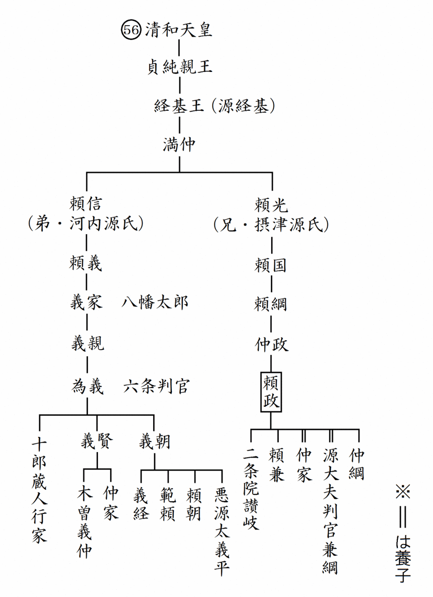

| これで読破！ 平家物語 巻第七 | |
| 三石由起子 | |
| genkosha (2014) | |
完訳 平家物語
百二十句本による
第六十一句から第七十句


第六十一句 平家ほつこくげこう（平家北国下向）
平家北国下向
一
寿永二年二月二十二日、主上は朝覲のために、法住寺殿へ行幸なる。鳥羽の院六歳にて、朝覲の行幸あり、その例とぞ聞こえし。同じく二十三日、宗盛従一位し給ふ。同じく二十七日、内大臣を辞し申さる。これは兵乱のためなり。南都、北京の大衆、熊野、金峯山の僧徒、伊勢大神宮にいたるまで、一向平家をそむき、源氏に心を通じけり。四方へ宣旨をなしくだし、諸国へ院宣をつかはすも、みな平家の下知とのみ心得て、したがひつく者なかりけり。そのころ、木曾と兵衛佐と不快のこと出で来たる。兵衛佐、「木曾を討たん」とて、六万余騎をあひ具して、信濃の国へ発向す。
木曾これを聞き、乳人〔子〕の今井の四郎兼平をもつて、「なにによつてか義仲を討たんとは候ふやらん。ただし、十郎蔵人殿こそ、それを恨むることあつて、これにおはしたるを、義仲さへ情なくもてなし申さんこといかんぞや。されば当時はうち連れてこそ候へ。このほか意趣あるべしともおぼえず。なにゆゑ、今日、明日仲違はれたてまつり、合戦し、平家に笑はれんとは存ずべく候ふ」と言ひやりければ、兵衛佐、「今こそかくはのたまへども、頼朝討たるべきよし『たしかにはかりごとをめぐらされける』とこそ承れ。それによるまじ」とて、討手の一陣をさし向けられければ、木曾、「真実に意趣なき」よしをあらはさんがために、嫡子清水の冠者義基とて、生年十一歳になる小冠者に、海野、望月、諏訪、藤沢以下の兵ども、そのほかあまたつけて、兵衛佐のもとへつかはす。
兵衛佐、「このうえは意趣なし」とて、清水の冠者あひ具して、鎌倉へこそ帰られけれ。
木曾はやがて越後〔の国〕へうち越えて、城の四郎と合戦す。いかにもして討ち取らんとしけれども、長茂主従五騎に討ちなされ、行きがた知らずぞ落ちにける。越後の国をはじめて、北陸道の兵みな木曾にしたがひつく。木曾は東山・北陸、両道をうちしたがへて、「ただいま都へ攻め入るべし」とぞ聞こえける。平家は、「今年よりも、明年は、馬の草飼ひにつけて合戦すべき」と披露せられたりければ、南海、西海、山陰、山陽の兵ども、雲霞のごとくに馳せのぼる。東海道にも、遠江の国より東こそ参らざれ、相模の国の住人俣野の五郎景久、伊豆の国の住人伊東九郎祐澄、武蔵の国の住人長井の斎藤別当実盛は、平家の方にぞ候ひける。東山道にも、近江、美濃、飛騨の者参りたり。
平家、まづ北国へ討手をつかはすべき評定あり。すでに討手をつかはす。大将軍には、小松の三位の中将維盛、副将軍には、越前の三位通盛、小松の少将有盛、丹後の侍従忠房、左馬頭行盛、皇后宮亮経正、薩摩守忠度、能登守教経、三河守知度。侍大将には、上総太郎判官忠綱、飛騨の大夫判官景高、河内の判官季国、高橋の判官長綱、越中の前司盛俊、同じく三郎兵衛盛嗣、武蔵の三郎左衛門有国、俣野の五郎景久、伊東九郎祐澄、長井の斎藤別当実盛、悪七兵衛景清を先として、都合その勢十万余騎、寿永二年四月十七日の午の刻に都をたつて、北国へぞおもむきける。平家は片道を賜はつてければ、逢坂の関よりはじめて、道にもちあふ権門勢家の正税、官物ともいはず、いちいちに奪ひ取る。まして志賀、唐崎、真野、高津、塩津、海津の辺を、いちいちに追捕して通りければ、人民多く逃散す。〔先陣はすすめども、後陣はいまだ近江の国、海津の辺にひかへたり。〕
寿永二年二月二十二日、安徳天皇は法住寺殿にいらっしゃる後白河院にご挨拶に行かれた。鳥羽院が六歳で、父院にご挨拶をされた例に倣ったものだそうな。同月二十三日、宗盛は従一位になられた。同じく二十七日、内大臣を辞職する。これは兵乱のためであった。興福寺や比叡山の大衆、熊野、金峯山の僧徒、伊勢大神宮に至るまで平家に背いて源氏に心を通じたのである。四方へ宣旨を下し、諸国へ院宣を遣わしたが、受け取った誰もが平家の下知だと心得て、帝や院からの物とは思わずに従わないのであった。その頃、義仲と兵衛佐・頼朝とが不仲になった。頼朝は、
「木曾を討とう。」
と、六万余騎を率いて信濃国へ向かった。
水原一は、これは史実ではなく、おそらく頼朝は鎌倉に腰を据えて軍勢を派遣したろうと考察している。
義仲はこれを知って、乳母子である今井四郎・兼平に理由を訊かせた。
「どういう訳で義仲を討とうと思われたのか。十郎蔵人殿（＝行家）が、そちらを恨んでここに来ていましたが、この義仲までもがそっけなく扱うのもどうかと思いましたので、一緒におりました。その他に思い当たることはございません。何故、今日、明日に仲違いをなさって合戦し、平家に笑われようとなさるのか。」
と、言いやると、頼朝は、
「そうは言うが、頼朝を討つという謀があると確かに聞いている。言うことが違うだろう。」
と、討手の一陣をさし向けたので、義仲は、本心から、逆心など抱いていないのだと表わすために、嫡子である清水冠者・義基という生年十一歳の小冠者に、海野、望月、諏訪、藤沢以下の兵、その他を数多く付けて頼朝に遣わしたのである。長男という武家にとっては大事な子供を、家来を付けて人質として差し出し、戦闘を避けようとしたという意味である。頼朝は、
「この上は意趣なし。」
と満足して、清水冠者を連れて鎌倉へ戻った。
義仲の戦闘を避けた軟弱外交は、信濃国の人々に大変感謝されて、これ以後、信濃国の後ろ盾を受けることになる。
水原一の解説を引く。
「義仲の長男・清水冠者義基は、諸本によっては義高、義重という別名で伝えられる。最も知られるのは「義高」だが、信用に足る系図では「義基」が正しい。当時は十一歳の子供である。この辺りの記述は、広本系によれば、武田源氏が木曽と結びつこうと義仲の長男を婿に迎え入れたいと申し入れるが義仲が拒絶。そこで武田は義仲を見限って頼朝に付く。付くだけでなく、頼朝に義仲についての讒言を吹きこんだ、と語られている。義仲は、頼朝に対抗できる勢力をまだ持っていなかったので、長男・清水冠者に家来を付けて差し出したのである。武家同士では、人質であり、婿養子でもある形を取ることもある。頼朝には娘が二人いて、姉を大姫、妹を三幡（＝乙姫）という。これは大姫の婿としての人質であり、頼朝と義仲の間はこの時は、何事もなく終わる。」
義仲はすぐに越後国へ出て、城四郎と合戦した。どうやってでも討ち取ろうとしたが、長茂は僅か主従五騎になって行方不明に落ちて行ってしまった。これで越後国を始め、北陸道の兵が皆、義仲に従ったのである。義仲は、東山道、北陸道の両道を掌握し、今にも都に攻め上ると噂された。
平家は、
「今年ではなく、来年、馬に若草を食わせる頃（＝四月頃）の合戦である。」
と披露したので、南海道、西海道、山陰道、山陽道の兵達が雲霞の如くに馳せ上って来た。東海道でも遠江国以東からは参じる者はなかったが、相模国の住人・俣野五郎景久、伊豆国の住人・伊東九郎祐澄、武蔵国の住人・長井斎藤別当実盛は、平家方に付いたのであった。東山道でも、近江、美濃、飛騨の者が馳せ参じた。
平家は、まずは北国へ討手を遣わすことを決め、すぐに発向した。総大将には、小松三位中将・維盛、副将軍には、越前三位・通盛、小松少将・有盛、丹後侍従・忠房、左馬頭・行盛、皇后宮亮・経正、薩摩守・忠度、能登守・教経、三河守・知度。侍大将には、上総太郎判官・忠綱、飛騨大夫判官・景高、河内判官・季国、高橋判官・長綱、越中前司・盛俊、同じく三郎兵衛・盛嗣、武蔵三郎左衛門・有国、俣野五郎景久、伊東九郎祐澄、長井の斎藤別当・実盛、悪七兵衛景清を先として、都合その勢十万余騎であった。
寿永二年四月十七日の正午に都を発ち、北国へ赴く。平家は片道分の軍費として沿道諸国から徴税する権限を与えられていたので、逢坂の関から始めて、道中で権力や勢力のある家々に集められた上納物資を一々、皆、奪い取って進んだ。まして志賀、唐崎、真野、高津、塩津、海津の辺りでは、家屋や資材の没収、罪人の捕縛などもしたので、人民の多くが逃げ散じた。先陣は進軍していたが、後陣はまだ近江国、海津の辺りにいたのである。
水原一の解説を引く。
「清水冠者には、『平家物語』には語られない有名な後日談がある。現在は寿永二年であるが、翌年の寿永三年に、義仲は頼朝の差し向けた東国の討手によって都で滅びる。頼朝は、もはや敵となった人質の清水冠者を許しておけずに殺そうとした。だが、許嫁に同情した大姫が父親の計画をもらすのである。清水冠者も、お付きの者達も少年だったので女装して脱走するが、討手に追いつかれて討ち取られる。その記事が『吾妻鑑』に見える。大姫は悲しんで病の床に臥した。鬱病であった。病状は一進一退して、十三年間苦しんだ後に亡くなった。『平家物語』にはその悲恋が書かれない。この話は、中世の『清水冠者物語』に取り上げられた。その話では、清水冠者は入間川ではなく、東北に逃げて那須野の関で捕えられ、鎌倉へ移送されたと書かれている。小坪の浜で処刑され、冠者の後を追って大姫は死ぬという物語にされている。史実では、十三年間の鬱病の末の死が、小説では大姫の後追い自殺にされた。大姫の死後に、頼朝、妹・三幡、一条高能という青年が相次いで死亡して、これが大姫怨霊談として伝わっている。頼朝の死因については『吾妻鑑』の中にも記述がない。そのために、安徳天皇の怨霊に取り殺された、義経や行家の怨霊に取り殺された、という伝説が生じた。その伝説の一つに、大姫、清水冠者の怨霊も加わったのである。頼朝と政子の子供達、すなわち頼家、実朝、大姫、三幡はいずれも非業の死を遂げている。母親・政子には、子供達全てが不幸な死を遂げたのであるから大変な苦しみであった。政子は承久の変の翌々年に、最後の隠居所を作るが、それは頼朝が大姫を供養のために建てようとして中断されていたお堂であった。建てて二年後に政子はこの世を去る。それらの記述を読むと、政子は四人の子供達の中でも特に大姫の死に対して深い悲しみを抱いたと思われる。
長茂と義仲との度々の合戦は、他の『平家物語』にはあまり書かれない。百二十句本では、短い記事だが、さらなる合戦が続いたとある。長茂は越後の豪族であり、横田川原で大敗北があっても、そのまま消えるわけはない。義仲は、信濃から越後に出るには、城の残存勢力と戦わねばならなかった。結局は長茂が負けてどこかに消えるが、十何年後かの後日談を残している。『平家物語』は、十二巻に纏められた実に見事な軍記だが、歴史はまた、物語の外側や周辺に別の事件や物語を様々に潜ませている。『平家物語』を読みながら、『平家物語』の外側にも目を向けると面白い。
平家の軍勢の「武者揃え」が長々と語られる。参加した東国の武士の中で「相模国の住人・俣野五郎景久」は、頼朝が石橋山で敵対した大庭景親の弟である。また「伊豆国の住人・伊東九郎祐澄」も頼朝に敵対した伊東祐親の子である。「武蔵国の住人・長井の斎藤別当実盛」は、かつては源氏方の勇士で、今は平家に従う古兵である。この三人の名を特にあげて紹介する。この軍勢は、北陸に向かう道々で、戦費や食料の徴発を許可されていたが、人民が皆、土地を捨てて逃げてしまったので、遠征軍は困窮した。だが、『方丈記』にも見られるように、この年は全国的な大飢饉で、平家方も遠征軍の食料が充分にないままでの遠征であった。」
第六十二句 ひうちかつせん（火打合戦）
火打合戦
一
木曾義仲は、わが身は信濃にありながら、越前の国火打が城をぞかまへける。大将軍には平泉寺の長吏斎明威儀師、稲津の新介、斎藤太、林の六郎光明、富樫の入道仏誓、入善、宮崎、石黒を先として、七千余騎ぞ籠りける。さるほどに、平家の先陣は越前の国木辺山をうち越えて、火打が城へぞ寄せられける。この城のありさまを見るに、磐石そばたちて四方の峰をつらねたり。山をうしろに、山をまへに当つ。城のまへには、能見川、新道川とて二つの川流れたり。二つの川の落ちあひに大木を立てて、しがらみをかき、せきあげたれば、水、東西の山の根にさし満ちて、ひとへに大海に臨むがごとし。
影南山をひたして、青うして滉瀁たり。波西日を沈めて、紅にして奫淪たり。昆明池のありさまも、これにはいかでかまさるべき。
平家は、むかへの山に宿し、むなしく日数をおくる。城のうちの大将軍、平泉寺の長吏斎明威儀師、心がはりして、消息を書きて、蟇目の中に籠めて、しのびやかに山の根をつたへて、平家の陣へぞ射入れたる。「この蟇目の鳴らぬこそあやしけれ」とて、取つてこれを見るに、中に文あり。ひらきて見れば、かの川は往古の淵にあらず。一旦しがらみをかきあげたる水なり。いそぎ雑人どもつかはして、しがらみを切り破らせ給へ。山川なれば、水はほどなく落ちんずらん。馬の足立よく候へば、いそぎ渡させ給へ。うしろ矢は射てまゐらせん。平泉寺の長吏斎明威儀師が申状とぞ書いたりける。
大将軍、副将軍、大きによろこんで、やがて雑人どもをつかはし、しがらみを切り破らせらる。案のごとく、山川なれば、水はほどなく落ちにけり。そのとき、平家の大勢ざつと渡す。
斎明威儀師は、やがて平家と一つになつて忠をいたす。稲津の新介、斎藤太、入善、宮崎、是等は、みなしばし戦ひ、城を落ちて、加賀の国へぞ引きしりぞく。平家やがて加賀の国へうち越えて、林、富樫が二箇所の城郭を追ひ落す。さらに面を向くべしとも見えざりけり。都にはこれを聞き、よろこぶことかぎりなし。
義仲は自分自身は信濃国にいるままで北陸全てを制していたが、その勢力は越前国にまで及んで火打城を構えた。水原一は、しかし、火打城を構えた時点では、すでに義仲は越後に入っており、さらに富山の入口に当たる宮崎に本拠を構えていたと考察している。
総大将は平泉寺の長吏・斎明威儀師、稲津の新介、斎藤太、林六郎光明、富樫入道・仏誓、入善、宮崎、石黒を先として、七千余騎が城に籠った。
越中の武士・入善、宮崎、石黒の一族は、同じ一族で大きな勢力を持っていた。宮崎を味方につけて越中を手に入れ、さらに白山勢力にも影響力を持っていたと言われる。斎明は平泉寺の僧兵の頭で、それが武士をかき集めて七千余騎となった。火打城はこの時すでに義仲の最先端勢力であった。
そこへ平家が攻めかかる。先陣が越前国、木辺山を越えて火打城へ押し寄せた。
この城は、極めて頑丈な岩山が四方の峰を連ねていた。山また山の山の中である。城の前には、能見川、新道川という二つの川が流れていた。山の間の川である。この二つの川の落ち合いに大木を立て、柵をかいて堰き止めれば、水は東西の山の根に満ちて大海のような湖ができる。それを城の堀として使うのである。
水原一は、土地の老人の話として「牛の皮千枚と馬の皮千枚で川を堰き止めた」逸話を紹介している。
白楽天に『昆明の池』という詩がある。漢の武帝が「昆明」を討つために大きな池を作り、船戦の練習をさせた池である。
影浸南山青滉瀁
（影、南山をひたして、青うして滉瀁たり。）
波沈西日紅隠淪
（波、西日を沈めて、紅にして隠淪たり。）
しかし、その昆明池でさえも、この人造湖には及ばないであろう。
平家は向かいの山に陣取って、手も足も出ず、空しく日を過ごしていた。だが、ここで城の中にいた平泉寺の長吏・斎明威儀師が心変わりをしたのである。
斎明は、蟇目を使った。鏑矢の鏑の部分が大きい矢を使って、その中に手紙を入れ、山の根伝いに平家に射入れた。鏑矢は、射れば大きな音がするが、詰め物のためにこの矢は鳴らなかった。音がしないことを訝しく思った平家が、矢を調べると手紙がある。開いてみると、城を攻略する策略が書いてあった。「この川は天然の川ではなく、山の中の人造湖なので、一旦柵が破られれば水は一度に流れ下る。雑兵を使って川の堰を切り落とせ。馬の足場も良いから、一気に攻めなさい。「後ろ矢」は、引き受ける。」と約束する手紙であった。「後ろ矢」とは、味方の後ろから裏切って矢を飛ばすことである。
平家の大将軍、副将軍は、大いに喜び、すぐに雑兵達を使って柵を切り破らせた。案の定、勾配の急な山の川なので、水はすぐに落ちた。それと時を同じくして、平家の大軍がざっと渡した。斎明威儀師は、直ちに平家と一つになって忠を尽くした。稲津の新介、斎藤太、入善、宮崎、これらは皆、暫く戦ったが、火打城は落ちたのである。加賀国へ引き退いたのを、平家はすぐに追撃して、林、富樫の二か所の城郭をも落とした。敵がさらに抵抗するとは思われなかった。都ではこの連戦連勝の報告に大いに歓喜したのである。
二
同じく五月八日、平家は加賀の国篠原にて勢揃ひして、それより軍兵を二手に分けて、大将軍には小松の三位の中将維盛。副将軍には越前の三位通盛。先陣は越中の前司盛俊。都合その勢七万余騎。加賀と越中とのさかひなる砥波山へぞ向かはれける。搦手の大将軍には左馬頭行盛、薩摩守忠度、三万余騎にて、能登と越中とのさかひなる志保坂へこそ駆けられけれ。
さるほどに木曾の冠者義仲、越後の国府より五万余騎にて馳せ向かふ。先に十郎蔵人行家を大将軍にて、一万余騎を引き分けて、志保坂の手へさし向けらる。残るところの四万余騎を手々に分かつ。総じて七手に分かたれたり。〔木曾、わが身は一万余騎にて、小屋部の渡りをして、砥波山の北の埴生に陣をぞ取つたりける。〕木曾のたまひけるは、「平家は大勢にて下るなり、山うち越えて、黒坂の裾の松坂の柳原、ぐみの木林の広みへ出づるものならば、走り合ひの合戦にてこそあらんずれば、馳せ合ひの合戦は、いかにも勢の多く少なきによることなり、大勢かさにかけられてはかなふまじ。搦手をまはせや」とて、楯の六郎親忠、七千余騎にて北黒坂へまはる。仁科、高梨、山田の次郎、七千余騎にて、南黒坂へ向かふ。わが身は大手より一万余騎。また一万余騎をば、松坂の柳原に引き隠し、今井の四郎兼平六千余騎にて鷲の島をうち渡り、日宮林に陣をとる。
木曾のたまひけるは、「この勢黒坂に向かはんことは、はるかのことぞ。さあらんほどに、平家の大勢、山よりこなたへ越えなんず。勢は向かはずとも、旗を先に立つるものならば、『源氏の先陣向かうたり』とて、山よりあなたへひかんずらん。旗を先に立てよ」とて、勢は向かはねども、黒坂の上に、白旗三十流ばかりうち立てたり。案のごとく、平家これを見て、「あはや、源氏の先陣すでに向かひてんげり。ここは山も高し、谷も深し、四方巌石なり。搦手たやすくはよもまはらじ。馬の草かひ、水かひ、ともによげなり。馬休めん」とて、大勢みな、山の中にぞおりゐたる。
同じく五月八日、平家は加賀国、篠原で軍勢を揃えて二手に分けた。総大将に小松の三位中将・維盛。副将軍には越前三位・通盛。先陣は越中前司・盛俊である。都合、七万余騎で加賀と越中との境にある砥波山へ向かった。搦手の大将軍は左馬頭・行盛と薩摩守・忠度である。三万余騎で能登と越中との境にある志保坂へ駆けて行く。
木曾の冠者・義仲は、越後の国府から五万余騎で馳せ向かった。先発には十郎蔵人・行家を総大将とする一万余騎が志保坂へさし向けられていた。五万の義仲の軍勢の内、義仲は一万余騎で小屋部へ渡り、砥波山の北の埴生に陣を取り、残る四万余騎を七手に分けた。
埴生には石清水八幡宮の分社である羽生八幡がある。源平の主力の正面衝突である。義仲は、
「平家は大軍で下って来る。砥波山を越えて、黒坂の裾にある松坂の柳原、ぐみの林の広みに出ての合戦となる。馬を馳せ合っての合戦では、いかにも多勢に無勢であるから敵うまい。搦手に廻せ。」
と、命じて、楯六郎親忠を七千余騎で北黒坂へ廻した。
仁科、高梨、山田の次郎が、七千余騎で南黒坂へ向かった。義仲は大手から一万余騎を率いて松坂の柳原に隠した。今井四郎兼平が六千余騎で鷲の島をうち渡り、日宮林に陣を取った。義仲は、
「この勢が黒坂に向かって攻めるには時間がかかる。その間に平家の大軍が山を越えて来る。先に攻めたいが体制が整わぬ。時間稼ぎに旗だけを先に立てよ。それを見れば、我らがすでに黒坂にいると見て、山から下ることはない。旗を先に立てよ。」
と、軍勢は向かわせずに、黒坂に源氏の白旗を三十流立て、平家の足止めを企んだ。案の定、平家はこれを見て、
「あはや、源氏の先陣はすでに黒坂にいる。ここは山も高く、谷も深く、四方は巌石であるから搦手に廻るのも容易ではなかろう。馬に飼葉を食べさせ、水をやって、しばらく馬を休めよう。」
と、大軍は、山の上に動かずにいたのである。
平家が下るのを差し控えていたところへ義仲が不意打ちをかけた。
第六十三句 木そのぐはんじよ（木曽の願書）
木曾の願書
この願書は、砥波山の合戦に先立って、義仲が埴生の八幡宮に戦勝祈願の願を立てた願書で、書いたのは太夫坊覚明である。義仲の北陸快進撃で最も輝かしい勝利として伝えられる「砥波山の合戦」、別名「倶利伽羅峠の合戦」（＝「倶利伽羅落とし」）の序曲に当たるのが、この願書の一節である。
一
木曾は八幡の社領、埴生の荘に陣とつて、きつと四方を見まはせば、夏山の峰の緑の木の間より、朱の玉垣ほの見えて、かたそぎづくりの社壇あり。木曾これを見給ひて、案内者を召して、「これはなにの社ぞ、いかなる神を崇めたてまつりたるぞ」とたづねられければ、「これは、八幡を遷しまゐらせて、当国には『新八幡』とこそ申し候へ」。木曾おほきによろこんで、手書に具せられたる、木曾の大夫覚明を呼びて、「義仲こそ、さいはひに八幡の御宝前に近づきたてまつりて合戦をとげんずるなれば、それについて、『かつうは後代のため、かつうは当時の祈祷のため、願書を一筆、書いて参らせばや』と思ふはいかに」。「もつともしかるべく候」とて、馬より飛び下り、書かんとす。覚明、褐の直垂に、黒糸縅の鎧着て、斑母衣の矢負ひ、塗籠籐の弓持ちて、黒き馬にぞ乗りたりける。箙より小硯、畳紙を取り出だし、木曾殿の御前にひざまづいてぞ書いたりける。数千の兵これを見て、「文武の達者かな」とぞほめたりける。
この覚明と申すは、勧学院に蔵人道弘とて候ひけるが、出家して最乗坊信救とぞ名のりける。しばしは南都にありしが、高倉の宮、三井寺にわたらせたまひしとき、南都へ牒状を送られたり。その返牒をこの信救ぞ書いたりける。「清盛は平氏の糟糠、武家の塵芥」と書いたりしこと、太政入道おほきに怒つて、「信救法師が首をはねよ」とのたまふあひだ、南都をひそかにのがれ出で、北国へ落ちくだり、木曾にぞつきたりける。かかる才人なれば、なじかは書きも損ずべき。書きあげてぞ読うだりける。
義仲は、八幡宮の社領である埴生の荘に陣を取り、きっと四方を見まわした。夏山の峰の緑の木の間から朱の玉垣が仄かに見え、先端を斜めに切り落としたかた削ぎ造りの社壇があった。義仲はそれを見て、地元の者を召し、
「これは何の社か。どのような神を崇め奉るのか。」
と、お訊きになると、
「これは、八幡を勧請したもので、ここでは新八幡と呼んでおります。」
との返事であった。
義仲は大いに喜んで、書記役として連れていた大夫覚明を呼び、
「この義仲が、幸運にも八幡の御宝前の近くで合戦をしようとしているのだ。後代のため、また、現在の祈祷として願書を一筆、書き奉ろうと思うがどうか。」「もつともしかるべく候。」
覚明は馬から飛び下りて、早速書こうとした。覚明は、「褐の直垂に、黒糸縅の鎧着て、斑母衣の矢負ひ、塗籠籐の弓持ちて、黒き馬にぞ乗りたりける。」という真っ黒な装束である。
覚明は、箙から小硯と畳紙を取り出し、義仲の御前に跪いて書いた。数千の兵がこれを見て、
「文武の達者かな。」
と、褒めた。
この覚明の素性は、初め、藤原氏の学問所・勧学院に在籍していた。蔵人・道弘（＝おそらくは藤原道弘）という名前であったが、出家して最乗坊信救と名乗って暫くは奈良に住んだ。高倉の宮（＝以仁王）が、三井寺にお入りになった事件では、興福寺に送られた牒状に返事を書いたのがこの信救であった。「清盛は平氏の糟糠、武家の塵芥」と書き、怒った清盛が首を刎ねようとしたのである。密かに奈良を逃げ出して、北国へ落ち下り、義仲に付いたのであった。このような才人なので、書き損じるはずもなく、すぐに書き上げて、とうとうと読んだ。
水原一の解説を引く。
「僧でありながらの厳めしい武装で、義経に仕えた弁慶を彷彿とさせる。実は弁慶は実在自体がかなり怪しい。もしかすると、弁慶の物語はこの覚明の姿から作られたものではないかと考えられる。広本系によれば、清盛に首を刎ねられそうになって逃げ出した時には、漆を顔に被って人相を変えたという。須俣川の合戦で落ち行く行家に出会って、伊勢の大神宮に願書を書く。それから行家と共に頼朝、その後義仲の元に行くのである。覚明は、義仲を大変に気に入って、この後は直接義仲の書記役として活躍した。ただの書記役ではなく、代行戦術にもかなり積極的に関わって、参謀格であったと伝えられる。」
二
帰命頂礼、八幡大菩薩は日域朝廷の本主、累世明君の曩祖たり。宝祚を守らんがため、蒼生を利せんがため、三身の金容をあらはして、三所の権扉をおしひらく。
ここに向年よりこのかた、平相国といふ者あり。四海を管領し、万民を悩乱せしむ。これはすでに仏法の怨、王法の敵なり。
義仲いやしくも弓馬の家に生まれ、わづかに箕裘の芸を継ぐ。彼の暴悪を見るに、思慮を顧みるにあたはず。運を天道にまかせ、身を国家になげうち、試みに義兵を起し、凶器を退けんと欲す。
闘戦両家の陣を合はすといへども、士卒いまだ一塵の勇を得ざるのあひだ、まちまち心おそれをなすところに、いま一陣において旗を戦場に挙げて、たちまち三所和光の社壇を拝し、機感純熟、すでにあきらかなり。凶徒誅戮うたがひなし。歓喜の涙をおとし、渇仰胆に染む。なかんづく曾祖父、前の陸奥守源の義家の朝臣、身を宗廟の氏族に帰付し、名を「八幡太郎」と号してよりこのかた、その門葉として帰敬せざるといふ事なし。義仲、その後胤として、首を傾くること年久し。
いまこの大功を起して、たとへば、嬰児蠡をもつて巨海を測り、螳螂が斧をとつて、隆車に向かふがごとし。しかれども国のため、君のためにこれを起し、家のため、身のためにこれを起さざる。心ざしの至り、神鑒暗からんや。たのもしいかな、よろこばしいかな。伏して願はくは、冥顕威を加へ、霊神力を合はせ、勝つことを一時に決し、怨を四方に退け給へ。しかればすなはち、丹祈冥慮にかなひ、幽玄加護をなすべくは、まづ一つの瑞相を見せしめたまへ。
寿永二年五月十一日 源の義仲敬白
と読みあげて、十三の上矢をそへて、御宝殿にぞ納めける。たのもしいかな、八幡大菩薩、真実の心ざしの二つなきをや、はるかに照覧し給ひけん、雲のうちより山鳩二つ飛び来たつて、源氏の白旗のうへに翩翻す。平家もこれを見て、みな身の毛もよだちたり。
昔、神功皇后、新羅を攻め給ひしに、霊鳩明天にあらはれ、軍に勝つことを得給へり。しかるに、この人々の先祖八幡太郎義家、奥州の貞任を追罰せしとき、厨川の館にて、王城の方にむかひ、はるかに八幡を拝したてまつりて、「これは私の火にあらず、すなはち神火なり」とて火をはなつ。霊鳩、炎のうちにあらはれ、旗の上に飛びめぐる。か様の先蹤を思ひつづけて、木曾殿兜を脱ぎ、霊鳩を拝し給ひけん、心のうちこそたのもしけれ。
覚明の書いた願書は、八幡の神徳を称え、清盛の暴悪をあげ、小勢で平家に向かう義仲に神助をお貸し下さいという内容であった。「帰命頂礼」は、仏を礼拝する時に唱える言葉で、「仏の教えに帰依し、地面に頭を摺りつけて礼拝する」という意味である。八幡宮の本地を菩薩として祈願するため、このように唱えるのである。
帰命頂礼。八幡大菩薩は我が朝廷の本主であり、代々の明君の祖であります。天皇の位をお守りするため、民の幸福を願うために、阿弥陀三尊の尊い黄金のようなお姿を現わして、社殿の扉を押し開かれます。この数年来、平相国（＝清盛）という者があって、国内を管領して万民を苦しめておりました。仏法の怨であり、王法の敵であります。この義仲は、いやしくも弓馬の家に生まれ、非力ながらも武芸を継いでおります。あの暴悪を見れば、思慮するにも及びません。運を天道に任せて、身を国家に擲ち、義兵を起こして、凶器を退けようとしております。源平両家が戦場に兵を進めて対陣しておりますが、士気が高まらず、まちまちの心で恐れをなしておりましたところ、今、この陣で旗を戦場に挙げると、忽ちにしてこの三所和光の社壇を拝しました。祈願を八幡神が受け入れて下さることは明らかに見えます。これで凶徒を誅戮すること疑いなしと感得しております。歓喜の涙を落として、御利益を胆に染み入るほどの渇仰しております。我が曾祖父である前陸奥守・源義家朝臣が、我が身をその尊い社の氏子として捧げ、名を「八幡太郎」と号して以来、その子孫である以上は、誰一人として帰依しない者はありません。この義仲は、その後胤として、長年、首を垂れて崇敬して参りました。今、為そうとしていることは、例えば幼児が貝で大海の水を量るように不可能なこと、また、螳螂が斧を持って戦車に立ち向かうように無謀なことであります。しかれども国のため、君のために立ち上がったもので、決して家のためでも、我が身のためでもありません。この誠実な真心が暗々のうちに神に通じたのです。頼もしいかな、喜ばしいかな。伏して願わくは、この上に神仏の霊威を加へて力を合わせ、速やかに勝利させて、民衆の怨を四方に退けて下さい。お約束下さるなら、何でも構いません。何かの瑞相をお見せ下さい。寿永二年五月十一日 源義仲敬白
と読み上げて、十三人が鏑矢を添えて御宝殿に納めた。
すると、この義仲に、真実、二心がないことを八幡大菩薩が、遥かにご照覧になったのか、雲の中から山鳩が二羽飛んで来て、源氏の白旗の上を旋回したのである。平家もそれ見て、皆、身の毛がよだった。
鳩は八幡の使いである。それが源氏の白旗の上で飛び回るのを、山の上の平家にも見えたのであった。これは「鳩の沙汰」と呼ばれている。八幡神社には「八幡大菩薩」と書かれた扁額があるが、「八」の字が向かい合わせの鳩二羽の格好になっている所も多い。
昔、神功皇后が新羅を攻めた時に、やはり鳩が二羽、天に現われて戦に勝ったことがある。神功皇后がお産みになった応神天皇は八幡神となった。義仲達の先祖である八幡太郎義家が、奥州の安倍貞任を討った時には、自ら厨川の柵に火を付け、皇居の方角に向かって、「これは私の火にあらず、神が放つ火である。」と放った火が燃え広がった。すると霊鳩が焔の中に現われて、源氏の旗の上を飛び回った。その先例を思い出した義仲は、兜を脱いでこの鳩を拝んだ。頼もしいことであった。
前九年の役から始まり、十二年もかかった奥州戦争での逸話である。『陸奥話記』の最後の場面に書かれるこの話は、ただし、義家の話ではなく頼義の話として書かれている。
三
源平陣を合はせて、たがひに盾を突き、向かうたり。そのあはひ三町にはすぎじとぞ見えし。されども源氏もすすまず、平家もすすまず。
ややあつて、源氏なにとや思ひけん、精兵をすぐり、十五騎を出だして十五の鏑を平家の陣へぞ射入れたる。平家も十五騎出だして十五の鏑を射返す。源氏、また三十騎出だして、三十の鏑を射さすれば、三十の鏑を射返しけり。五十騎出だせば、五十騎を出だしあはせ、百騎を出だせば百騎を出だし、両方盾の面にすすんだる。たがひに勝負を決せんとすすめども、源氏の方には、総じて制して勝負をせず。
源氏は、かくあひしらひて日を暮らし、「夜に入りて、うしろの谷へ追ひ落し、滅ぼさん」とするをば知らず。平家も、ともにあひしらひて、日を暮らすことこそはかなけれ。次第に、暗うなりしかば、搦手の勢一万余騎、平家の陣のうしろなる倶利伽羅の堂の辺にて参りあひ、倶利伽羅の堂のまへにて一万余騎、箙の方立を打ちたたき、天も響き、大地もうごくほどに、鬨をどつとつくる。
木曾これを聞き、大手より一万余騎にて鬨をどつと合はす。松長の柳原にひき隠したるが、一万余騎にて戦ふ。今井の四郎兼平、六千余騎にて、日宮林より一度にをめいて寄せ向かふ。前後四万騎が鬨の声、「山も川もただ一度に崩るるか」とぞおぼえける。
平家は、「ここは山も高し、谷も深し、四方巌石なり。搦手たやすくよもまはらじ」とて、うちとけたるところに、思ひもかけぬ鬨〔の声〕におどろきて、あわてさわぎ、「もしやたすかる」と、そばの谷へぞ落しける。「きたなしや。返せ。返せ」と言ふやからも多かりけれども、大勢のかたぶきたちぬれば、取つて返すことなし。されば、「われ先に」とぞ落しける。親の落せば、子も落す。主の落せば、郎等もつづく。兄が落せば、弟も落す。馬には人、人には馬、落ち重なつて、さしも深き谷一つ、平家の勢七万余騎にてぞ埋みける。巌泉血をながし、死骸丘をなす。大将軍維盛ばかり、からき命生きて、加賀の国へ引きしりぞく。上総の太郎判官忠綱、飛騨の大夫判官景高、河内の判官季国みなこの谷にてぞ死にける。その谷の辺には「矢の穴、刀のあと、今にある」とぞうけたまはる。
生捕にせられたる者おほかりけり。まづ火打が城にて心がはりしたりける平泉寺の長吏斎明威儀師、平家の侍に聞こふる兵、備中の国の住人瀬尾の太郎兼康、生捕にせられにけり。「斎明威儀師、生捕にせられたり」と聞こえしかば、木曾殿、これを召し寄せ、まへに引き据ゑ、やがて首を刎ねられけり。
夜明けてのち、しかるべき者ども、三十余人首を切りかけて、木曾殿のたまひけるは、「そもそも、十郎蔵人が志保の手こそおぼつかなけれ。いざ行きて見ん」とて四万騎が中より、馬、人、強きをすぐつて二万騎、志保の手に馳せ向かふ。越中の国、氷見の湊といふ所を渡さんとするをりふし、潮さし満ちて、深さ、浅さを知らず。鞍置馬を追ひ入れて泳がす。鞍爪ひたるほどにて、むかひの岸のはたへ渡り着く。「こはいかに。浅かりけるを」とて、大勢うち入れて渡す。
志保坂へ押し寄せ見給へば、案のごとく、十郎蔵人は散々に射しらまされて引きしりぞき、駒の足を休めゐけるところに、木曾、「さればこそ」とて、二万騎入りかはつて、鬨をつくり、をめいて駆く。平家、しばらくこそ支へけれ、志保の手も追ひ落されて、加賀の国篠原へこそ引きしりぞきけれ。
さて、倶利伽羅峠の夜襲である。源平が陣を合わせ、互いに盾を突いて向かい合った。その距離は三町（＝約三二七メートル）を越えぬほど近かった。だが、源氏も進まず、平家も進まない。暫くしてから、源氏は何を思ったのか、精兵を選んで十五騎を出すと、十五の鏑を平家の陣へ射入れたのである。平家も十五騎を出して十五の鏑を射返した。源氏が、また三十騎を出して三十の鏑を射ると、平家は三十の鏑を射返した。五十騎出せば、五十騎を出し合わせ、百騎を出せば百騎を出し、両軍は盾の面に進んだ。勝負を決しようと進軍するのだが、源氏方は、制して勝負をしないのである。そうして、源氏は昼の戦をまるで遊びのように戦った。鏑矢を射て、平家をからかい、時間を稼いで夜を待っていたのである。夜に入ってから、後ろの谷に追い落として滅ぼす作戦であった。だが、平家はそれに気付かず、鏑矢を射合っていたのである。浅墓なことであった。
次第に暗くなって来た頃、源氏の搦手一万余騎は、平家の陣の後ろにある倶利伽羅の堂の辺りで集結した。そうして倶利伽羅堂の前で箙（＝矢を入れる道具）の方立を打ち叩いた。天も響き、大地も動く程の鬨をどっと作ったのである。
倶利伽羅は、不動明王の剣に纏いついた黒龍である。その剣を持つ不動明王を倶利伽羅不動という。それを祀るお堂がある峠が、倶利伽羅峠であった。
義仲は鬨の声を聞くと、大手から一万余騎で、どっと鬨を合わせた。松長の柳原に隠していた一万余騎であった。今井四郎兼平が、六千余騎で日宮林から一度に喚いて寄せ向かった。前後四万騎の鬨の声である。山と川が、一度に崩れたように思われた。平家は、
「ここは山も高く、谷も深く、四方は巌石であるから、よもや搦手から廻って敵が寄せることはない。」
と、油断していたので、この思いもかけぬ鬨の声に驚き騒いだ。
助からぬものでもないと思ったのか、急坂どころではない谷の底へ、馬に乗って駆け下りるものもある。
「見苦しいぞ。逃げるな。返せ。返せ。」
と言う輩も多かったが、軍勢が総崩れになった以上、取って返すことはなかった。それで、我れ先にと、急坂を乗り下ろすのである。親が駆け下りれば、子も駆け下りる。主が駆け下りれば、郎等も続いた。兄が駆け下りれば、弟も駆け降りる。馬には人が、人には馬が、落ち重なって、さしも深き谷一つが平家の軍勢七万余騎で埋まった。谷川が血で染まり、死骸で丘ができた。総大将の維盛だけが、ようやく生き延びて加賀国へと引き退いた。上総太郎判官・忠綱、飛騨大夫判官・景高、河内判官・季国は、皆、この谷で死んだのだった。その谷の辺りには今もなお矢の穴や、刀の跡が残っているそうである。
生捕りにされた者も多かった。まず、火打城で心変わりをした平泉寺の長吏・斎明威儀師、また平家の侍の中でも評判の備中国の住人・瀬尾太郎兼康が生捕りにされた。
瀬尾太郎兼康は、巻八で壮烈な戦が語られるが、その伏線としてここに書かれている。
「斎明威儀師を生捕りにしました。」
と報告があった時、義仲はこれを召し寄せて、前に引き据えるとすぐに首を刎ねたのであった。
夜が明けてから、しかるべき者、三十余人の首を切り、義仲が言うには、
「十郎蔵人（＝行家）を差し向けた志保の軍勢が気がかりだ。行ってみよう。」
と、四万騎の中から、馬も人も強いものだけを選んで二万騎で志保に駆けつけた。
氷見の湊を渡そうとしたが、満潮で深さが分からない。だが、鞍を置いた馬を入れて泳がせてみると、鞍爪（＝馬の鞍の下の端）が浸る程度で向かいの岸に着いた。
「こはいかに。浅かりけるを。」
と、大軍を海に打ち入れて駆け向かう。
この氷見の湊は、記述から判断すると、現在の地形とは随分違っていたと考えられる。
志保坂へ押し寄せて見ると、案の定、行家は散々に射すくめられて退却の途中であった。駒の足を休めていたので、義仲は、
「さればこそ。」
と、二万騎で入れ代わり、鬨をつくって戦った。
平家は、暫くの間は支えていたが、この志保でも追い落とされて加賀国、篠原へ退却した。
こうして義仲は、越中に侵入した平家に大打撃を与えて撃退したのである。
水原一の解説を引く。
「維盛は辛うじて命拾いしたが、大事な家来を何人も失った。この義仲の最も輝かしい戦い「倶利伽羅峠の夜襲」は、戦略的な奇襲の成功という意味もあるが、第一には八幡への願書である。勝利の祈願をしたことによる「八幡の加護」を軍記物語では重要視する。この話は、謡曲『木曽』や幸若舞の『木曽願書』に取り扱われる。これらは全てが八幡への願書を朗読し、倶利伽羅の大勝利へと続く。願書と倶利伽羅はひと組に取り扱われるのである。願書の朗読は「読み物」と呼ばれて、重要な芸である。史実では八幡願書の前に白山願書があるのだが、似た願書なので八幡の記述だけが残されたのだろう。文学的整理を行なった結果である。広本系や古い『平家物語』では、その両方を載せている。
白山は、当時絶大な勢力を持っていた。加賀、能登、越中、越前に大きな力を持ち、大勢の僧兵を抱えていた。北陸を手中に収めたい義仲は、この白山の勢力と結びつく必要があったのである。火打城に入った事実は、白山との提携が成っていたことを意味する。だが、義仲を裏切ったのも白山の斎明だった。不穏分子もいたのである。しかし、この倶利伽羅の大勝利によって、白山は完全に義仲に付いた。倶利伽羅の不動も白山の末社である。広本系では、勝利の原因を白山との結びつきに置き、語り物系では、八幡との結び付きを強く語ることになった。
この合戦は、八幡の願書の日付によれば五月十一日であるが、都に届いた平家大敗北の知らせは六月一日のことであった。五月十一日以後にも合戦があったのだろう。平家の大軍を七万余騎とするのは誇張である。倶利伽羅峠はそのような大軍では陣を敷けない。おそらく先鋒隊の負けが五月十一日であり、平家の大軍が決定的に負けたのが、場所は不明ながら六月一日であった。敗因は平家の軍が逸り過ぎて統制を乱したこと、全体的な統制が取られなかったことである。平家の敗走は、白山の勢力下を抜けての退却であった。完膚無きまでに叩かれたのである。
第六十四句 さねもり（実盛）
実盛
一
同じく二十三日、卯の刻に源氏篠原へ押し寄せて、午の刻まで戦ひけり。暫時の合戦に、源氏の兵一千余騎討たれぬ。平家方には高橋の判官長綱をはじめとして、二千余騎ぞ滅びける。平家篠原を攻め落されて落ち行きけり。
その中に武蔵の三郎左衛門有国、長井の斎藤別当実盛は、大勢に離れて、二騎つれて引き返し戦ひけり。三郎左衛門有国は敵に馬の腹を射させて、しきりに跳ねければ、弓杖をついて下り立つたり。敵のなかに取りこめられて散々に射る。矢種みな射尽くし、打物抜いで戦ひけるが、矢七つ八つ射立てられて、立死にこそ死にけれ。
三郎左衛門討たれてのち、長井の斎藤別当実盛、存ずるむねありければ、ただ一騎残つてぞ戦ひける。信濃の国の住人手塚の太郎馳せ寄つて、「味方はみな落ち行くに、ただ一騎残つていくさするこそ心にくけれ。誰そや、おぼつかなし。名のれ、聞かん」と言ひければ、「かう言ふわ殿は誰そ。まづ名のれ」と言はれて、「かく言ふは、信濃の国の住人手塚の太郎光盛ぞかし」と名のる。斎藤別当、「さる人ありとは聞きおきたり。ただし、わ殿を敵に嫌ふにはあらず、存ずるむねあれば、今は名のるまじ。寄れ。組まん。手塚」とて押しならべて組まんとするところに、手塚が郎等、中にへだたつて、むずと組む。
実盛は手塚が郎等を取つて、鞍の前輪に押しつけて、刀を抜き、首をかかんとす。
手塚は、郎等が鞍の前輪に押しつけらるるを見て、弓手よりむずと寄せあはせて、実盛が草摺たたみあげて、二刀刺すところを、えい声をあげて組んで落つ。実盛、心は猛けれども、老武者なり、手は負うつ、二人の敵をあひしらふとせしほどに、手塚が下になつて、つひに首を取らる。
手塚は、遅ればせに馳せ来たる郎等に、斎藤別当が物具はがせ、首持たせ、木曾殿のまへに馳せ参り、申しけるは、「光盛こそ今日奇異のくせ者に組みて討ち取つて候へ。なにと『名のれ』とせめ候ひつれども、つひに名のり候はず。『侍か』と見れば、錦の直垂を着て候。また、『大将軍か』と思へば、つづく勢も候はず。声は坂東声にて候ひつる」と申せば、「あはれ、これは斎藤別当実盛にてやあらん。ただし、それならば、義仲ひととせ幼な目に見しかば、すでに白髪糠生なりしぞ。いまはさだめて白髪にこそあらんずるに、鬢、鬚の黒きは、あらぬ者やらん。年来の得意なれば見知りたるらんものを。樋口召せ」とて、召されたり。樋口の次郎参り、実盛が首をひと目見て、やがて涙にぞむせびける。「いかに、いかに」とたづねられければ、「あな無慚や。実盛にて候ひけり」と申す。
「鬢、鬚の黒きはいかに」とのたまへば、樋口の次郎涙を押しのごひて申しけるは、「さ候へばこそ、その様を申さんとすれば、不覚の涙が先立つて、申し得ず候。弓矢取る身は、あからさまの座席とは思ふとも、思ひ出でになることを申しおくべきにて候ひけるぞや。つねは兼光に会うて物語り申せしは、『実盛、六十にあまつて軍の場に向かはんには、鬢、鬚を墨に染めて若やがんと思ふなり。そのゆゑは、若殿ばらにあらそひて先を駆けんも大人げなし。また、老武者とてあなどられんも口惜しかるべし』なんど、つねは申し候ひしが、今度を最後と存じて、まことに染めて候ひける無慚さよ。洗はせて御覧候へ」と申しもあへず、また涙にぞむせびける。「さもあらん」とて洗はせて見給へば、白髪にこそ洗ひなせ。
実盛、錦の直垂を今度着たりけることは、都を出でしとき、大臣殿に参り、申しけるは、「一年、東国のいくさにまかり下り候ひて、駿河の蒲原より矢一つも射ずして逃げのぼりて候ひしこと、老後の恥辱ただこのことに候ふなり。今度、北国へ向かふならば、年こそ寄りて候ふとも、真先駆けて討死つかまつらんずるにて候。それにとつては、実盛、もとは越前の者にて候ふが、近年所領につきて武蔵の長井に居住せしめ候ひき。事のたとへの候ひしぞかし。『故郷へは錦を着て帰る』と申すことの候。しかるべくは、実盛に錦の直垂を御ゆるされ候へかし」と申しければ、大臣殿、「まことにさるべし」とて、錦の直垂を許されけるとぞ聞こえし。
昔の朱買臣は錦の袂を会稽山にひるがへし、今の実盛はその名を北国のちまたにあぐ。
同じく二十三日、午前六時頃、源氏は篠原へ押し寄せて、昼まで戦ったが、暫くの間に兵一千余騎が討たれてしまった。平家方は、高橋判官・長綱を始めとして二千余騎が滅んだ。大切な家臣であった。高橋判官・長綱は、平家にとっての道案内役であった越中前司の長男である。平家は篠原を攻め落とされて落ちて行く。その中に武蔵三郎左衛門有国と、長井斎藤別当実盛がいたが、大勢とは離れて二騎だけで引き返して共に戦った。三郎左衛門有国は敵に馬の腹を射られ、馬がしきりに跳ねるので、弓杖をついて下り立った。敵の中に取り籠められながらも散々に射る。矢種を全て射尽くして、太刀を抜いて戦ったが、矢を七本、八本と射立てられて立死にした。三郎左衛門が討たれてから、長井斎藤別当実盛は、考えるところがあって、ただ一騎で戦った。信濃国の住人・手塚太郎が馳せ寄って、
「味方は皆、落ちて行ったのに、ただ一騎残って戦をするとはご立派なことだ。誰か知らぬが、名のれ。名を聞こう。」
と、言うと、
「そういうお前は誰だ。まず名のれ」
と、言われて、
「信濃国の住人・手塚太郎光盛ぞかし。」
と、名のる。
手塚は諏訪湖の辺りにある諏訪神社の神職の一族であった。それを聞いた斎藤別当は、
「そういう人物がいるとは聞いている。わ殿（＝あなた）を敵として不満足だと軽蔑するのではない。考えるところがあって、今は名のるまい。寄れ。組もう。手塚。」
と、自分が名乗りをしない非礼を断ってから、押し並んで組み合おうとしたが、そこに手塚の郎等が割って入って、むずと組んだ。
手塚の家来が組み付くのを捕まえて、鞍の前輪（＝鞍には前後に輪型がある）に押し付け、刀を抜いて首を掻こうとした。それを見て手塚は実盛の左手にむずと拠って馬をぴったりとつけた。刀は右手にあるので、左から攻められると戦えない。手塚は草摺（＝腰から下の鎧）を引き上げて二刀刺す。そしてえいと掛け声をあげて組みついて馬から落ちた。実盛の心は猛っていても老武者であった。手負いの状態である上に、二人を引き受けて手塚の下に入った。組伏せられて遂に首を取られてしまうのである。手塚太郎は家来に言い付けて実盛の鎧を剥ぎ取らせ、首を持たせて義仲の前に馳せ参じ、
「この光盛、本日、奇異の曲者と組み合って、討ち取りました。何と、名のれと責めましたが、遂に名のりませんでした。ただの侍かと見れば、錦の直垂を着ております。大将軍かと思えば、続く勢もなく一人で戦っておりました。声には坂東訛りがありました。」
と、申し上げると、
「あはれ、これは斎藤別当実盛であろう。だが、それなら、この義仲は昔、幼い時に見ているが、白髪の混じったごましお髪であった。今なら定めし白髪頭になっているはずだ。こんな鬢や、鬚が黒い筈もない。長年、見て来た者なら分かるだろう。樋口を召せ。」
と、召されたのだった。
樋口次郎に首実験をさせたのは、樋口がよく信濃国から武蔵に通って、実盛を見知っていたからである。だが、樋口の次郎は、実盛の首をひと目見ると直ちに涙に咽んでしまった。
「いかに、いかに。」
と尋ねると、
「あな無慚や。実盛にて候ひけり。」
と、申し上げる。
「鬢、鬚の黒きはいかに。」
と、訊くと、樋口の次郎は涙を押し拭って、
「はい。それを申し上げようと思って、不覚の涙が先立ちまして申せませんでした。弓矢を取る身は、かりそめの言葉であっても、いざという時のために、かねがね言い置くべきなのだと存じました。実盛は常日頃、この兼光に会って語っていたのです。『実盛、六十歳に余る年齢で戦の場に向かう時には、鬢、鬚を墨で黒く染めて若々しくしていようと思う。若い侍と争って先駆けするのも白髪であっては大人げない。また、見た者が、老武者だと侮るのも口惜しい。』と。そういつも申しておりました。きっと今度の戦を最後と思って、本当に染めたのでしょう。無慚なことです。洗わせて御覧になれば分かります。」
と、最後まで言えずに、また涙に咽ぶのであった。
「さもあらん。」
と、洗わせてから御覧になると、白髪であった。
この実盛が、錦の直垂を着ていた理由は、都を発つときに、大臣殿（＝宗盛）に参上して、
「去年、富士川の合戦に出向きながら、矢の一つも射ることなく、駿河の蒲原から逃げ帰ったこと、この老後の恥辱は、これに尽きます。今度、北国へ向かう時には、年を取ってはいても、真先に駆けて討ち死にしようと存じます。それについては、この実盛は、もとは越前の者でございます。それが所領の武蔵の長井に住んでいたのです。事の譬えにも『故郷へは錦を着て帰る』とあります。この実盛に錦の直垂を着ることをお許し下さい。」
と、申し上げると、大臣殿は、
「まことにさるべし。」
と、錦の直垂を許されたとのことである。
昔の朱買臣は、錦の袂を会稽山に翻し、今の実盛はその名を北国の巷に上げたのであった。
能の修羅物『実盛』は、世阿弥の作で、太空上人と実盛との問答である。能は、僧と亡霊との出会いと問答が眼目である。太空上人と亡霊の実盛が出会って以来、代々の遊行上人は一代に一度は、実盛の墓に詣で「虫送り」の祭りをすることとなった。稲の害虫を追うことを「さなぶり」「さのぼり」「さねぶり」などというが、「実盛」の名にこじつけたと言われる。実盛の怨霊が稲の虫になるので、怨霊を鎮めて稲の虫を送り出す。現在に続く農村行事である。
『奥の細道』の芭蕉も、篠原に立ち寄って実盛を弔い、「あな無慚やな兜の下のきりぎりす」という句を詠んだ。これは虫になった実盛の幽霊を詠んだ句であり、きりぎりすは、実盛の霊であった。「あな無慚やな」は字余りだが、これも『平家物語』で首実験の樋口次郎が「あな無慚や。実盛にて候ひけり」と言ったことによる。謡曲でも「あな無慚やな」と謡われる。実盛の話の中では有名な台詞なので、芭蕉はそのまま詠み込んだ。もっとも『奥の細道』にこの句を入れた時には「あな」を除いて「無慚やな」と字余りでない句になっている。
水原一の解説を引く。
「冒頭の記述にある高橋判官・長綱の討ち死には、『平家物語』の別本では、かなり詳しく語られている。越中の武士・入善小太郎に組みつかれるが、強い長綱は忽ちに小太郎を組み敷く。首を取ろうとして顔を見ると、わが子ほどの若武者であった。つい情けをかけてしまうが、情けをかけられた小太郎は、隙を見て長綱を討ち取るのである。
老武者・実盛の武勇を伝える話は、『保元物語』や『平治物語』にもある。実盛は、説話の材料を提供する男である。軍記物語に話題を提供することにかけては実に面白い。討ち死にの後にまで話を展開させる。首を洗ってみると墨が落ちて白髪だったのは、有名な話である。また、大将でなければ着られない錦の直垂を着る。「故郷に錦を飾る」という会稽山の戦いで朱買臣の故事を言うのである。
この戦いから二百年後、篠原に実盛の幽霊が出たという。遊行上人（＝時宗の一遍上人の後を継ぐ上人）に供養を受けたことが室町時代の『満済准后日記』にはある。この頃の遊行上人は第十四代の太空である。
実盛自身が説話的人物なのだ。説話的な人格を自分自身が演出する。手塚太郎と組み討ちになっても名前を名乗らない。理由は、死に首になって敵の大将の前に出れば、必ず自分が実盛だとわかる。白髪を染めた理由も伝わる。その死後の逸話を自分自身で演出した。手塚太郎も、感動した義仲も、涙を流す樋口次郎も、全て実盛の脚本の中で計算されていた。死んだ後でも、生き残った人間を台本通りに動かす。説話的人格という。一つしかない命を捨てる時、命の捨て場で説話を実現するのは、武士特有の心構えによるものであり、並々ならぬ覚悟なのである。」
第六十五句 げんばうのさた（玄昉の沙汰）
玄昉の沙汰
一
平家は、去んぬる四月北国に下りしときは、十万余騎と聞こえしが、今五月〔下旬に〕帰り上るには、わづかにその勢三万余騎。さしも花やかにいでたちて都をたちし人々の、いたづらに名をのみ残し、越路の末の塵となるこそかなしけれ。入道の末の子三河守知度も討たれ給ひぬ。忠綱、景高もかへらず、季国、長綱も討たれぬ。「『流を尽くしてすなどるときは、多くの魚ありといへども、明年には魚なし。林を焼いて狩するときは、多くの獣ありといへども、明年には獣なし』と、のちを存じて少々は残されべきものを」と申す人もおほかりけり。
飛騨守景家は、「最愛の嫡子景高討たれぬ」と聞こえしかば、臥ししづみて嘆きけるが、しきりにいとま申すあひだ、大臣殿ゆるされけり。やがて出家して、うち臥すこと十余日ありて、つひに思ひ死にこそ死にけれ。これをはじめとして、親は子を討たせ、子は親を討たせ、妻は夫におくれて、家々には、をめきさけぶ声おびたたし。北国のいくさにうち負けて、都へ帰り上りにけり。
四月に北国に向かった平家十万余騎は、五月下旬に今は三万余騎で帰って来た。あれほど華やかに都を出発した人々が、名だけを残して、越路の末の塵と消えたのは悲しいことである。清盛入道の末子・三河守知度討ち死に。忠綱、景高も帰らぬ人となり、家来の季国や長綱も討たれてしまった。流れにある全ての魚を取り尽くしてしまえば、漁獲はあるが、明年の魚はない。林を焼き払ってまで狩りをすれば、多くのけだものを捕まえられても、翌年狩りをすべき動物はいない。
「平家も後のことを考えて兵力を少しは都に残すべきであった。」
と、噂する人も多かった。
総力を北陸に注ぎ込んで再起不能なほどの打撃を受けた平家であった。
飛騨守・景家は、最愛の嫡子である景高が討たれたと聞いて、床に就いて嘆いていたが、しきりにお役を辞退したいと申し出るので、宗盛が許す。すぐに出家して、十日余り寝付いていたが、遂に思い死にしてしまった。これを始め、子を討たれ、親を討たれ、夫に先立たれて、家々には、嘆き叫ぶ声が夥しかった。平家は北国の戦で大敗北を喫しての帰京であった。
二
六月一日、蔵人の左衛門権佐定長、仰せをうけたまはつて、祭主神祇権少副大中臣の親俊を殿上のおり口へ召され、「兵革をしづめんがために、大神宮へ行幸なるべき」よし仰せ下さる。大臣宮と申すは、高天の原より天降らせ給ひて、大和の国笠縫の里にましましけるを、十一代の帝垂仁天皇二十五年丙辰三月に、伊勢の国五十鈴の川上、下津石根に大宮柱を広う敷き立てて、祝ひそめたてまつりしよりこのかた、日本六十余州、三千七百五十余社の神祇冥道のうちには無双なり。されども代々の帝の臨幸はいまだなかりけり。奈良の帝の御時、左大臣不比等の孫、参議式部卿宇合の子、右近衛の少将兼大宰少弐広嗣といふ人あり。
天平十五年十月に、肥前の国松浦の郡にして、十万の凶賊をかたらひて、国家をあやぶめんとす。これによつて大野の東人、広嗣が討手に向かふ。その祈りのために、帝はじめて伊勢へ行幸なるとかや。
広嗣討たれてのち、その亡霊荒れて、おそろしき事ども多かりけり。同じき天平十八年六月に筑前の国観世音寺供養せらる。導師には玄昉僧正請ぜらる。すでに高座にのぼり、表白の鉦打ち鳴らして候ふとき、にはかに鳴神おびたたしく鳴つて、玄昉のうへに落ちかかつて、その頭を取り、雲中へぞ入りにける。おそろしなんどもおろかなり。これは玄昉僧正、広嗣を調伏したりけるによつてなり。これによつてかの霊をうやまひ、「松浦の鏡の宮」と号す。この僧正は吉備の大臣入唐のとき、法相宗をわたされし人なり。
唐人、「玄昉」といふ名を難じて、「玄昉とは『還つて亡ぶ』といふ声あり。いかさまにも帰朝ののち、事にあふべき人なり」と申したりとかや。
そののち、なか一年あつて、曝れたる頭に「玄昉」といふ銘を書いて、興福寺に空より落し、どつと笑ふ声ありけり。おそろしかりし事どもなり。
嵯峨の天皇の御時、平城の先帝、尚侍のすすめによつて、世を乱り給ひしその御祈りには、帝第三の姫宮を賀茂の斎院に立てまゐらせ給ひけり。朱雀院の御時、将門、純友、兵乱の御祈りに、八幡の臨時の祭礼はじめらる。か様の事どもを例として、さまざまの御祈りどもはじめられけり。
六月一日、安徳天皇は、蔵人左衛門権佐・定長と、祭主神祇権少副・大中臣親俊を殿上の下り口へお召しになって、
「兵乱を鎮めるために、伊勢の大神宮に行幸する。」
と、仰せ知らされた。
伊勢神宮は並ぶもののない神宮だが、代々の帝が伊勢に行幸なさることは前代未聞であった。これは実際には実現しなかったが、伊勢の行幸といえば、と『平家物語』は歴史を披露する。
伊勢神宮は、高天原から天降って、大和国、笠縫の里に鎮座されていたのを第十一代・垂仁天皇の二十五年丙辰三月に、伊勢国、五十鈴の川上にある下津石根に大宮柱を広く敷き立てて、祝い始めて以来、日本六十余州、三千七百五十余社の神社の中で無双の社である。しかし、代々の帝の臨幸はいまだかつてなかった。奈良の帝（＝聖武天皇）の御時、左大臣・藤原不比等の孫であり、参議式部卿・宇合の子である右近衛少将兼大宰少弐・藤原広嗣という人物がいた。天平十五年十月に、肥前国、松浦郡で十万の凶賊を味方にして国家を危ぶめようと謀叛を起こした。そこで大野の東人が広嗣の討手として向かったのである。その祈りのために、聖武天皇が初めて伊勢に御幸なさったそうである。
広嗣が討たれて以後、その亡霊が荒れ、恐ろしいことが多く起こった。同じく天平十八年六月に筑前国に観世音寺を供養する。導師に要請されたのが玄昉僧正であった。玄昉が高座に上って鉦を打ち鳴らすと、俄かに雷が鳴つて玄昉の上に落ちかかり、その頭をねじ切って雲の中へ入って行ったそうだ。広嗣の亡霊であった。恐ろしいなどと言うも愚かである。これは、玄昉僧正が広嗣を調伏したのが原因であった。そういうわけで広嗣の霊を敬い、「松浦の鏡の宮」という号を贈った。この僧正は、吉備大臣が入唐した時に、法相宗を日本に伝えた人物である。しかし、唐土の人は、「玄昉」といふ名を非難した。
「「還って亡ぶ（＝日本に帰ってから亡ぶ）」という字と同音の発音で、帰朝してから事件に巻き込まれる運命の人である。」
と、言ったそうである。
それから、なか一年あって、しゃれこうべが空から興福寺に落ちて来た。「玄昉」と銘が入れられて、どっと笑う声がしたのである。恐ろしいことであった。
嵯峨天皇の御代では、先帝・平城天皇が、尚侍に唆されて世を乱された。その時の御祈りでは、帝の第三内親王を賀茂の斎院として立てたのであった。
朱雀院の御代では、将門、純友が謀叛を企て、その兵乱鎮定の御祈りに、八幡の臨時の祭礼が始められた。このようなことを先例として、様々なお祈りが始められたのである。
水原一の解説を引く。
「広本系のものには、玄昉が詳しく書かれている。九州と京都を一日で往復したとか、四方に向かって一度に矢を放ったとか、魔法使いのような怪人物であった。聖武天皇の伊勢行幸は、実際には実行されなかった。『平家物語』は、伊勢行幸の話題から、恐ろしい話を続けて、嵯峨天皇の御代に平城上皇の復位を図った「薬子の乱」、朱雀院の「将門、純友の乱」の歴史を述べて、神への祈願の例としている。」
第六十六句 よしなかちうじやう（義仲[山門]牒状）
義仲〔山門〕牒状
いよいよ都へ上る義仲は、北陸から京都へ出るために比叡山という障害を味方につける必要があった。そうでなければ平家には勝てない。そこで覚明の策によって比叡山に手紙を送る。
一
木曾は越前の国府に着いて合戦の評定あり。井上九郎、高梨の冠者、山田の次郎、仁科の次郎、長瀬の判官代、吾妻の判官代、樋口の次郎、今井の四郎、楯の六郎、根の井の小弥太以下、しかるべき者ども百人ばかり前に並みゐたりけるに向かつて、木曾のたまひけるは、「そもそも、われら都にのぼらんずるに、近江の国を経てこそのぼらんずるに、例の山法師のにくさは、また防ぐこともやあらんずらん。蹴破つて通らんことはやすけれども、平家こそ、当時は仏法をほろぼし、僧をも失へ。それを、守護のために上洛せんずる者が大衆にむかつて合戦をせんずること、すこしもちがはざる二の舞なるべし。これこそ安大事のことなれ。いかにせん」とぞのたまひける。木曾の大夫覚明すすみ出でて申しけるは、「さん候。衆徒は三千人にて候。必定、一味同心なることは候はじ。みな思ひ思ひにてこそ候はんずれ。まづ牒状を送りて御覧候へ。事の様は返牒に見え候はんずらん」。「さらば書け」とて、覚明に牒状を書かせて、山門へこそ送られけれ。
義仲つらつら平家の悪行を見るに、保元・平治よりこのかた、長く人臣の礼を失ふ。しかりといへども、貴賤手をつかね、緇素足をいただく。ほしいままに帝位を進退し、あくまで国郡を虜掠す。道理、非理を論ぜず、権門勢家を追捕し、有罪、無罪をいはず、卿相侍臣を損亡す。その資財を奪ひ取り、ことごとく郎従に与へ、彼の荘園を没取し、みだれがはしく子孫に省く。
なかんづく、去んぬる治承三年十一月、法皇を城南の離宮にうつしたてまつり、博陸を絶域に流したてまつる。しかのみならず、同じき四年五月に、二の宮の朱閣を囲みたてまつり、九重の紅塵を驚かしむ。ここに帝子非分の害をのがれんがために、園城寺に入御の時、義仲、先日に令旨を賜はるによつて、鞭をあげんと欲するところに、怨敵巷に満ち、予参道を失ふ。近境の源氏なほ参候せず、いはんや遠境においてをや。
しかるに、園城寺は分限なきによつて、南城におもむかしめ給ふのあひだ、宇治橋において合戦す。大将三位入道の父子、命を軽んじ、義を重んじ、一戦の功をはげますといへども、多勢の攻をまぬがれず、かばねを龍門原上にうづみ、名を鳳凰城にほどこす。令旨の趣肝に銘じ、同類の悲しみ魂を消す。これによつて、東国、北国の源氏等おのおの参洛をくはだて、平家を滅ぼさんと欲す。
その宿意を達せんがために、去年の秋、旗をあげ、剣をとつて、信濃を出でし時、越後の国の住人城の四郎長茂、数万の軍兵を召し具し発向せしむるのあひだ、当国横田川において合戦す。義仲わづかに三千余騎をもつて、彼の二万の兵を破りをはんぬ。風聞［＊「ほうぶん」と有るのを他本により訂正］広きに及んで、平氏の大将十万の軍衆を北陸に発向す。越州、加州の砥波、黒坂、志保坂、篠原以下の城郭において数箇度の合戦、はかりごとを帷幕のうちにめぐらし、勝つことを咫尺のもとに得たり。しかれば、討てば必ず伏し、攻むれば必ず降す。たとへば秋の風の芭蕉を破るに異ならず、冬の霜の薫蕕を枯らすにあひ同じ。これひとへに、神明、仏陀のたすけなり。さらに義仲が武略にあらず。平氏敗北のうへは参洛をくはだたんとなり。今は叡岳の麓を過ぎ、洛陽のちまたに入るべし。
この時にあたつて、ひそかに疑殆あり。天台の衆徒は平家に同心せんか。源氏に与力せんか。もし彼の悪徒を助けば、衆徒に向かつて合戦すべし。もし合戦をいたさば、叡岳の滅亡くびすをめぐらすべからず。悲しきかなや、平氏宸襟を悩まし、仏法を滅ぼすのあひだ、彼の悪行をしづめんがために義兵を起すところに、忽ちに三千の衆徒に向かつて不慮の合戦いたさんこと。いたましきかなや、医王、山王に憚りたてまつて、行程に逗留せしめば、朝廷緩怠の臣となつて、武略の瑕瑾のそしりを残さん。みだれがはしく進退に迷ひて案内を啓するところなり。乞ひ願はくは三千の衆徒おのおの思慮をめぐらし、神のため、仏のため、国のため、君のため、源氏に同心し、凶徒を誅し、洪化に浴せば、懇丹の至りに堪へず。義仲恐惶敬白。
寿永二年六月十日進上恵光律師御房
とぞ書いたりける。山門には、これを披見し僉議まちまちなり。あるいは「平家に同心せん」と言ふ衆徒もあり、あるいは「源氏につかん」と言ふ大衆もあり。思ひ思ひの異議さまざまなり。
老僧どもの申しけるは、「われらもつぱら金輪聖王、天長地久を祈りたてまつる。当代の、平家は御外戚にてまします。されば、いまに至るまで、かの繁昌を祈誓す。されども、悪行、法に過ぎ、万人これをそむけり。討手を国々へつかはすといへども、かへつて異賊のために滅ぼさる。源氏は、近年より度々合戦にうち勝つて、運命ひらけなんとす。なんぞ、宿運尽きぬる平家に同心して、運命をひらく源氏をそむかんや。平家値遇の儀をひるがへして、源氏合力の心に服すべき」のよし、一味同心に僉議して、やがて牒状を送る。
義仲はまず越前の国府で合戦の評定をした。国府は現在の福井県武生である。そこで比叡山対策が練られた。井上九郎、高梨の冠者、山田の次郎、仁科の次郎、長瀬の判官代、吾妻の判官代、樋口の次郎、今井の四郎、楯の六郎、根の井の小弥太以下、しかるべき者達が百人ほど並み居る前で、義仲は、
「そもそも、都に上ろうとするには近江国を経ることになるが、例の山法師の性質を考えると、また防戦しようと戦になることもあろう。僧兵たちを蹴破って通るのは簡単だが、それでは仏法を滅ぼす。平家はそれで立場を悪くし、僧達の力も失ったのである。同じ轍を踏むことはできない。仏法守護のために上洛するのだから、僧兵と合戦をするわけにはいかない。これが大案件である。いかにせん。」
と、おっしゃった。
木曽の大夫・覚明が進み出て、
「さん候。比叡山の僧は三千人でございます。当然、考え方も様々で同じ考えではありますまい。まずは手紙を送ってみましょう。返事が来れば事態が分かりましょうから。」
「さらば書け。」
と、覚明に牒状を書かせて山門へ送る。その内容で、まずは平家の横暴を述べた。
この義仲が、つらつら平家の悪行を見るに、保元・平治以来、長く人臣の礼を失っている。だが、貴賤を問わず、誰も言い出せずに、僧も俗もその足下に跪いて敬意を表わしているのである。勝手に帝位の進退を計り、思う存分、国や郡の領地を強奪している。道理、非理を論ぜず、権勢ある家の財産を没収して、有罪、無罪を言わず、公卿や大臣など帝の側近を傷付けたり、殺したりして来た。その資財を奪い取って、ことごとく家来達に与え、荘園を没収して無闇に子孫に分配して来た。中でも、治承三年十一月の政変で、後白河院を城南の離宮にお遷しして監禁し、関白・基房を大宰府に左遷したこと。さらに翌年治承四年の五月には、第二皇子の以仁王を囲んで宮中を震撼させたこと。ここで、後白河天皇の皇子（＝以仁王）は、身分に不相応な不当な迫害を逃れようと園城寺にお入りになって、義仲は令旨を賜わったのである。そこで鞭を上げて討伐しようとしたが、怨敵は巷に満ちて、合戦に間に合わなかったのである。近境の源氏がまだ参ぜずにいたので、いわんや遠境の源氏は当然、参じなかった。だが、園城寺は敷地も狭く、地形も不利であったので、南城にお連れしようとしていた時に宇治橋の合戦があった。そこで大将三位入道の父子（＝源頼政父子）は、命を軽んじ、義を重んじて、見事な闘いぶりであったが、多勢に無勢で命を失った。かばねを龍門原上に埋め、名を鳳凰城に残すことになった。令旨の趣を肝に銘じて、同類の悲しみに魂を消した。これによって、東国、北国の源氏が立ち上がって、平家を滅ぼそうとしたのである。その宿意を達せんがため、去年の秋に、旗を上げ剣を持って信濃を出た。越後国の住人・城四郎長茂が数万の軍兵を引き連れて来たので、当国横田川での合戦となった。義仲はわずか三千余騎で、敵の二万の兵を破ったのである。これが平家の耳に達して平家は十万の大軍を北陸に出した。越州、加州の砥波山、黒坂、志保坂、篠原以下の城郭で数度の合戦があり、策略をめぐらして討ち破り、勝つことができた。討てば敵は必ず伏し、攻めれば敵は必ず降すのである。たとえるなら秋の風が芭蕉を薙ぎ倒すのと変わらず、冬の霜が様々な草を枯らすのと同様である。これひとえに、神明、仏陀の助けがあったからである。決して義仲の武略に勝因があったのではない。平氏が敗北した以上は、都へ上ろうと思っている。そこで、今は比叡山の麓を過ぎて、洛陽の巷に入ろうとしている。この時に当たって、内心、危ぶまれることがある。
天台の衆徒は平家の味方か。源氏に力を貸すのか。もし、あの悪徒を助けるようなら、衆徒と合戦することになる。もし合戦をするとなれば、比叡山の滅亡は避けようもない。悲しいことである。平氏が帝を悩まし申し上げ、仏法を滅ぼすので、その悪行を鎮圧しようと義兵を起こすのだが、それが即座に三千の衆徒と思わぬ合戦をすることになれば、痛ましいことだ。薬師如来や、日吉の山王権現を憚って、進撃の途中でここでこのまま遅延、停滞するようなことは、朝廷にとって怠慢の臣となることである。武略の瑕瑾と謗りを残すことになろう。進退に迷ってお伺いするのである。乞い願わくは、三千の衆徒がそれぞれに思慮をめぐらして、神のため、仏のため、国のため、君のため、源氏に味方をして凶徒を誅し、天子の善政による恩沢に浴そうではないか。真心からこれを嘆願するものである。義仲恐惶敬白。寿永二年六月十日
宛先は「進上恵光律師御房」であった。
この恵光房は、当時の公家の日記『玉葉』から推察すると、比叡山では反平家分子の代表者であったらしい。現在の天台座主は、平家と大変親しかった。つまり、全体としては比叡山は平家に肩入れしようとしていたのである。だが、僧兵の数が多いので、見解を統一するには至らなかったのである。恵光房は以仁王事件でも、以仁王に加担しようとして果たせなかった。そのことを覚明は知っていたのである。
山門では、これを披見して僉議するが、意見はまちまちであった。
「平家に同心せん。」
と言う衆徒があるかと思えば、
「源氏につかん。」
と言う大衆もあった。
思い思いに異議が唱えられた。老僧達は、
「我らは専ら金輪聖王、天長地久を祈り奉る。当代の平家は、天皇の御外戚であられる。されば、今まで平家の繁昌を祈って来たのだ。だが、悪行が法に過ぎ、万人が平家に背いている。国々に討手を遣わしても、かえって異賊に滅ぼされる始末である。源氏は、近年、度々合戦に勝ち、運命が開けようとしているところだ。宿運の尽きた平家に味方して、運命を開きつつある源氏に背くことができようか。平家と親しくして来たこれまでの好を改めて、源氏に協力するべきだろう。」
と、一同は心を決めて、すぐに牒状を送った。
水原一の解説を引く。
「平家の悪行で、比叡山の国家平安の祈願は空しくなったという結論であった。『平家物語』の広本系では、義仲の手紙も比叡山からの返事もこれとはかなり違って、長く詳しく難しい。語り物では、短く分かり易くしたのだろう。広本系では、義仲が兄・仲家の死を悲しむ記述も見える。以仁王の事件から奈良の滅亡まで、あるいは行家の須俣の合戦など歴史の把握も詳しい。覚明が当時の社会事情としてかなり詳しい情報を把握し、義仲の許に転がり込んだのだと分かる。特に奈良焼打ちには悲憤慷慨して、牒状で詳しく訴えている。また、広本系では、「あなたの山は以仁王に味方するか」と、まるで以仁王がまだ生きていて、義仲の軍にいるかのような問いかけをしている。当時、風聞として以仁王生存説が飛び交っていた。死亡が確認出来ないまま、以仁王の令旨による謀反があちこちで起きた。同時に、伊豆にいる、駿河にいる、という風聞があった。都の平家もデマの度に首をかしげた程である。
おそらく覚明は、単なる書き役ではなく、自分が持つ社会の情報や、さらには平家への恨みを結集し、外交的な戦術を義仲に授けたのだろう。その中の一つが以仁王生存説をうまく使う事だった。単なる平家への謀反ではなく、大義名分であった。以仁王を助けて天皇の位に就ける。当時は、一時的にではあるが、効き目のある大義名分だったのである。」
二
そのことばに曰く、
六月十日の牒状、同じき十六日到来。披閲のところに数日の鬱念一時に解散す。およそ平家の悪行累年に及んで、朝廷の騒動止む時なし。事人口にあり、委悉するにあたはず。それ叡岳に至つて、帝都東北の仁祠として国家静謐の祈誓をいたす。しかるを一天ひさしく彼の夭逆にをかされて、四海とこしなへにその安全を得ず。顕密の法輪なきがごとし。擁護の神威しばしばすたる。
貴家たまたま累代武備の家に生まれて、幸ひに当時精選の仁たり。あらかじめ規模をめぐらし、たちまちに義兵を起す。万死の命を忘れて一戦の功を樹つ。その労いまだ両年を過ぎざるに、その名すでに七道にほどこす。わが山の衆徒かつがつ以て承悦す。国家のため、累家のため、武功を感じ、武略を感ず。かくのごとくなるときんば、山上精祈空しからざることをよろこび、海内衛護のおこたりなきことを知らん。自寺、他寺、常住の仏法、本社、末社、祭奠の神明、さだめて〔教法の再び栄えんことをよろこび、崇敬の旧に〕復せんことを随喜し給はん。衆徒等心中、ただ賢察をたれ給へ。しかればすなはち冥に、十二神将、かたじけなくも、医王善逝の使者として、凶賊追罰の勇士にあひ加はり、顕には、三千の衆徒、しばらく修学鑽仰の勤節を止めて、悪侶治罰の官軍をたすけしむ。止観十乗の梵風は奸侶を和朝の外にはらひ、瑜伽三密の法雨は時俗を旧年の昔にかへす。衆議かくのごとし。つらつらこれを察せよ。
寿永二年七月二日 〔大衆等〕
とぞ書いたりける。
その牒状の返書は、こうであった。
六月十日の牒状は、同月十六日に到来。読んで数日来の鬱念が一時に解消した。およそ平家の悪行は累年に及び、朝廷の騒動も止む時がない。この事は人の口に上って、言いつくす事もできない。それ我が比叡山は、帝都東北の仁祠として国家静謐の祈誓をしている。だが、天下は長い間、平家の暴虐によって損なわれ、国家は永久の安全を得られないでいる。顕教、密教の法輪もなきがごとき有様である。擁護の神威は、しばしば廃る。源氏が累代、武家に生まれて、幸いに現在、精選の仁である。予め立派な謀を巡らしてすぐに義兵を起こした。万死の命を忘れて戦の功を立てた。その功労がまだ二年も過ぎないうちに、源氏の名はすでに七道に聞こえている。当山の衆徒は、かつがつ以て承悦である。国家のため、累家のため、武功を感じ、武略を感じている。このような時であるから、山上からの祈りが空しくなかったことを喜び、国内の衛護が怠りないことを知る。自寺、他寺、常住の仏法、本社、末社、祭奠の神明は、定めし教法が再び栄えることを喜んで、崇敬の旧に復すことに随喜するだろう。衆徒等の心中は、ただご賢察あれ。しからばすなわち、人間界にあっては十二神将が、忝くも薬師如来の使者として凶賊追罰の勇士に加わるだろう。ここでは三千の衆徒が、暫く修学鑽仰の勤節を止め、悪人退治の処罰をする官軍を助けよう。天台の開祖が示した真理を達観する十の方法は、邪悪な輩を国外に追い払い、三密の行者の恵みは法雨となって、この俗世を旧年の昔に帰すことであろう。衆議はかくのごとく決定した。つらつらこれを察せよ。寿永二年七月二日 大衆等、と書いてあった。
第六十七句 へいけ一もんぐはんじよ（平家一門願書）
平家一門願書
比叡山の勢力を重要視して平家も手紙を送ったが、既に手遅れであった。
一
平家これを知らずして、「興福寺、園城寺は、いきどほり深きをりふしなり、かたらふとも、よもなびかじ。山門は当家のために不忠を存ぜず。当家もまた山門のために怨をむすばず。山王大師に祈誓して三千の衆徒かたらひとらん」とて、一門の公卿、同心の願書を書いて山門に送る。願書に曰く、
敬白延暦寺をもつて、帰依して氏寺と准じ、日吉の社をもつて、尊敬して氏社のごとくにす。一向天台の仏法を仰ぐべき事。右、当家一族の輩まことに祈誓あり。旨趣如何となれば、それ叡山は桓武天皇の御宇、伝教大師入唐帰朝ののち円頓の教法をこの所にひろむ。遮那の大戒をそのうちに伝へしよりこのかた、もつぱら仏法繁昌の霊窟たり。久しく鎮護国家の道場にそなはり。
まさにいま、伊豆の国の流人前の兵衛佐源の頼朝、身の咎を悔いせず、かへつて朝憲を嘲り、しかるに奸謀に与し、同心いたす源氏等、行家、義仲、以下党を結んで数あり。隣境、遠境数国を抄領し、土宜、土貢、万物押領す。これによつて、かつうは累代勲功の跡を追ひ、かつうは当時弓馬の芸にまかせ、すみやかに賊徒を追罰し、凶徒を降伏すべきのよし、かたじけなくも勅命をふくみ、しきりに征罰をくはだつ。ここに魚鱗鶴翼の陣の、官軍利を得ず。星旄電戟の勢、逆類勝に乗るに似たり。もし神明仏陀の加被にあらずんば、いかでか反逆の凶乱をしづめん。
ここをもつて一向天台の仏法に帰し、不退に日吉の神慮を頼むらくのみ。いかにいはんや、かたじけなくも、臣等の曩祖を思へば本願の余裔と言つつべし。いよいよ崇重すべし、いよいよ恭敬すべし。自今以後、山門に悦びあらば、一門の悦びとせん。社家に慎みあらば、一家の慎みとせん。善につき、悪につき、悦びとなし、憂ひとなさん。おのおの子孫に伝へて長く失堕せじ。藤氏は春日の社をもつて氏社とし、興福寺をもつて氏寺と号す。久しく法相大乗の宗に帰す。平氏は日吉の社、延暦寺をもつて、氏寺、氏社とせん。円実頓悟の教に値遇せんや。かれは昔の遺跡なり、家のために栄幸を思ふ。これは今の精祈なり、民のために追罰を請ふ。
仰ぎ願はくは、山王大師、東西満山の護法の聖衆、十二大願、日光、月光、医王善逝、十二神将、無二の丹誠を照らし、唯一玄応を垂れ給へ。しかればすなはち邪謀逆心の賊、〔手〕を軍門につかね、暴逆残害の輩、首を京都につたへん。我等が苦請の仏神、あになんぞ捨てんや。当家の公卿等、異口同音に礼をなし、祈誓くだんのごとし。
寿永二年七月五日
従三位行兼越前守平朝臣通盛
従三位行兼右近衛中将平朝臣資盛
正三位行右近衛中将兼伊予守平朝臣維盛
正三位行左近衛中将兼播磨守平朝臣重衡
参議正三位皇太后宮権大夫兼修理大夫加賀越中守平朝臣経盛
従二位行中納言兼左兵衛督征夷大将軍平朝臣知盛
従二位権中納言兼陸奥出羽按察使平朝臣頼盛
従一位内大臣平朝臣宗盛
敬白
とぞ書かれたる。貫首、これを憐み給ひ、やがても披露せられず。十禅師の御殿に籠めて、三日加持してのち披露せらる。はじめはありとも見えざりつる一首の歌、願書の上巻に出で来たり。
平かに花さくやども年経れば 西へかたぶく月とこそなれ
「山王大師、憐みを垂れ給へ。三千の大衆、力をあはせよ」となり。されども、年ごろ、日ごろのふるまひ、神慮をそむき、人ののぞみにも違ひければ、祈れどもかなはず、かたらへどもなびかず。大衆これを見て、「まことにさこそ」とは憐みけれども、すでに源氏に同心の返牒を送るうへは、「その儀あらたむる〔に〕及ばず」。許容する大衆もなかりけり。
平家は、義仲がすでに手紙を送り、比叡山が呼応したのも知らず、
「興福寺と園城寺は、怒りの深い折であるから、説得しても味方にはならぬだろう。比叡山は、平家のために不忠をするとは思われない。平家もまた山門のために怨みを持たない。山王大師に祈誓して三千の衆徒を味方につけよう。」
と、平家一門の主だった公卿が、連名で比叡山に願書を送った。
「敬白延暦寺をもつて、帰依して氏寺と准じ、日吉の社をもつて、尊敬して氏社のごとくにす。一向天台の仏法を仰ぐべき事。」
というのが、この願書の「見出し」である。
平家は今後、延暦寺を氏寺として扱い、日吉の社を氏の社として扱い、一向天台の仏法を崇敬するという意味である。
右のことを平家一族は、心から祈って誓約するものである。
本文はこの事柄について詳しく述べるものであった。
比叡山は、桓武天皇の御代に伝教大師が入唐し、さらに帰朝した後に円満にして偏らぬ仏法を広めた場所である。毘盧遮那の大戒（＝天台密教の教え）を伝えて以来、専ら仏法繁昌の霊窟である。久しく鎮護国家の道場である。今、伊豆国の流人である前兵衛佐・源頼朝が、身の咎を悔いもせず、かえって朝憲を嘲っている。その奸謀に与して味方する源氏等、行家、義仲、以下が党を結んで数多くある。
近国や遠国、数国を奪い取って領土とし、土地の産物と上納された年貢の全てを横領している。これによって、代々、勲功を重ねた人々の屋敷や財産を追い払い、現在の弓馬の達者な腕に任せて、速やかに賊徒を追罰し、凶徒を降伏させるのだと、忝くも勅命を含んで、しきりに征罰を企てている。ここにおいて魚鱗や鶴翼の陣形を取って合戦した官軍は利を得なかった。星のように煌めく旗、雷のようにひらめく鉾は、まるで逆賊が勝ったように見えている。ここで神明仏陀の加護を受けないでは、どうやって反逆の凶乱を鎮められようか。ここで一向天台の仏法に帰し、不退に日吉の神慮を頼むのである。忝くも我が祖先・桓武天皇を思えば、この寺の発起人の末裔であるなどとは口にできない。
比叡山をますます崇敬し、ますます恭敬するのである。現在ただ今以後、山門に悦びがあれば、我が平家一門の悦びとしよう。比叡山に慎しみがある時には、我が平家一家の慎しみとしよう。善につけ、悪につけ、悦びとなし、憂いとしよう。それぞれの子孫に伝え、その権威はいつまでも失堕させまい。藤原氏は春日の社を氏社とし、興福寺をもつて氏寺と号して、久しく法相大乗の教えに帰依している。同様に我が平家は日吉の社、延暦寺をもって氏寺、氏社としよう。完全で欠けたところのない頓悟の教えに巡りあった。藤原氏の興福寺は昔の遺跡であって、家のための栄幸を思うのである。比叡山は今の祈祷の場所で、民のために追罰を請うのである。仰ぎ願わくは、山王大師、東西満山の護法の聖衆、十二大願、日光、月光、医王善逝、十二神将、類もなき真心をご照覧になり、計りしれぬ神仏の感応を垂れ給え。そうなれば邪謀逆心の賊は、謙って降伏し、暴逆残害の輩の首を京都に伝えよう。我等が苦衷の中からお願いする仏よ、神よ、どうして我らをお捨てになろうか。平家の公卿達が異口同音に礼をなして、祈誓することは、この通りである。寿永二年七月五日
従三位行兼越前守平朝臣通盛
従三位行兼右近衛中将平朝臣資盛
正三位行右近衛中将兼伊予守平朝臣維盛
正三位行左近衛中将兼播磨守平朝臣重衡
参議正三位皇太后宮権大夫兼修理大夫加賀越中守平朝臣経盛
従二位行中納言兼左兵衛督征夷大将軍平朝臣知盛
従二位権中納言兼陸奥出羽按察使平朝臣頼盛
従一位内大臣平朝臣宗盛
敬白
と、ぞ書かれていた。
一番位の高い宗盛が最後に名前を連ねている。一番低いのは通盛で最初に名があった。この文章に心を動かされぬわけではないが、時すでに遅し。
貫首（＝天台座主）は、手紙を受け取ったが、すぐに披露することを躊躇った。十禅師の御殿にこの手紙を籠めて三日間のお祈りをする。すると初めは書いてあるとも気づかなかった一首の歌が、願書の上巻に出て来たのである。山王のご託宣の歌であった。
平かに花さくやども年経れば
西へかたぶく月とこそなれ
（花咲くように奢り高ぶって来た平家も、年を経て今や西へ傾く月となってしまった）
この歌は、「平か」と「やど」で「平家」という文字を隠している。山王託宣の歌なので、「比叡山よ、この平家を憐れんでやってくれ。」という意味になるが、もはや遅かった。
「山王大師、憐みを垂れ給え。三千の大衆よ、力を合わせよ。」
と、天台座主は祈る。
だが、年来の日頃の振舞いは、神慮に背き、人の望みとも違っていたので、祈れども叶わず、説得しても靡かなかった。大衆はこれを見て、
「まことにさこそ。」
と、憐まれたが、すでに源氏に味方するという返牒を送ってしまっていたのだった。
「改めて会議するまでもない。」
と、許容する大衆もなかった。
水原一の解説を引く。
「広本系では、平家の願書の後に、もう一つの文書を添えている。平家が持つ近江国、佐々木の荘の荘園を比叡山に寄付するというものである。この土地は、元来は宇多源氏である佐々木氏の領地であった。それが、平治の乱で源氏に味方した佐々木氏が敗れて亡したので没収したものであった。つまり、平家は比叡山に見返りを約束したのである。佐々木一族はその後、頼朝に忠実に仕えて手柄を立てる。「佐々木の四兄弟」はいずれも勇士揃いで、頼朝にとって功臣第一の者達である。やがて平家が滅亡すると、長男は近江の守護職となって帰って来て、昔の佐々木の荘に館を構えたが、何と、そこはすでに比叡山の領地になっていたという。比叡山は平家の手紙には応じなかったが、平家の差し出した手土産は、どさくさ紛れに分捕ったのである。ついに当主・佐々木定綱は比叡山と合戦する。頼朝には、この御家人を庇う責任があったが、さすがの頼朝も比叡山には逆えず、遂に佐々木の流罪で決着を見た。近江の佐々木の荘という土地が、この乱世に辿った変化も面白い。
本題に戻る。こうして平家は、比叡山の味方を得られずに、義仲が迫る中、ついに都を捨てて西に逃れ去るのである。
第六十八句 ほうわうくらまおち（法皇鞍馬落ち）
法皇鞍馬落ち
一
同じき二十日、肥後守貞能、鎮西の謀叛たひらげ、菊池、原田、松浦党を先として、三千余騎をあひ具し、都へ参りけり。西国ばかりは、わづかにたひらげたれども、東国、北国の源氏いかにもしづまらず。
同じき二十二日、夜半ばかりに、六波羅の辺、大地をうちかへしたるごとくに騒ぎあへり。馬に鞍おき、腹帯しめ、物の具東西に運び隠しあふ。
明けてのち聞こえしは、美濃の源氏に佐渡の右衛門尉重貞といふ者あり。これは一年保元の合戦に、八郎為朝がいくさに負けて落ちゆきけるを搦めまゐらせたりし勲功に、衛門尉になりたり。八郎搦め取るとて、源氏どもに憎まれて、近年平家をへつらひけるが、夜半ばかりに馳せ参つて、「木曾すでに近江の国に乱れ入り、その勢五万余騎、東坂本にみちみちて、人をも通さず。郎等に楯の六郎親忠、木曾の大夫覚明、六千余騎天台山に攻めのぼり、総持院を城郭とす。大衆みな同心して、ただいま都に攻め入る」と申したりけるゆゑとかや。
平家これを防がんがために、瀬田へは新中納言知盛、三位の中将重衡、三千余騎にて向かはれけり。宇治へは越前の三位通盛、能登守教経、三千余騎くだられけり。
さるほどに、「十郎蔵人行家、一万余騎にて宇治より入る」といふ。「足利矢田の判官代、五千余騎にて、丹波の国大江山を経て京へ入る」といふ。「摂津の国、河内の源氏は、同じく力をあはせて淀川尻より攻め入るべし」とぞののじりける。平家これを聞きて、「こはいかがすべき。ただ一所にていかにもならん」とて、宇治・瀬田の手をもみな呼びぞ返されける。
「帝都名利の地、鶏鳴いて、安き心なし。をさまれる世だにもかくのごとし。いはんや乱るる世においてをや。吉野山の奥へも入らなばや」とは思へども、諸国七道ことごとく乱れぬ。いづれの浦かおだやかなるべし。「三界無安猶如火宅」と、如来の金言、一乗の妙文なれば、なじかは少しもちがふべき。
同じく二十日、肥後守貞能が、九州の謀叛を平らげて、菊池、原田、松浦党を先とし、三千余騎を率いて都へ帰って来た。肥後守貞能は、平家の重臣の一人であり、九州に派遣されていた男である。それによって西国の源氏はわずかに治まったが、東国、北国の源氏は何とも鎮まらない。
同じく二十二日の夜半、六波羅の辺りが大地をひっくり返したような騒ぎとなった。人々は馬に鞍を置き、腹帯を締め、家財道具などを東へ西へと運んで隠していた。翌朝になって聞こえて来たのは、美濃源氏で平家方の右衛門尉重貞（＝佐渡の重貞）の話である。この男は、先年、保元の合戦で、源八郎為朝が敗戦して落ち行くところを搦め取った勲功により衛門尉に昇進した。為朝を搦め取ったということで源氏達には憎まれ、近年平家に従っていたのだが、それが夜半に馳せ参じて、
「義仲がすでに近江国に侵入した。五万余騎の軍勢で比叡山の麓、東坂本がいっぱいで、人も通行できない。家来には楯六郎親忠、木曾大夫覚明がいて、その六千余騎が天台山に攻めのぼり、比叡山総持院を城郭としている。僧兵全てが義仲に加担し、今、都に攻め入るところだ。｣
と、申し上げたための騒動であった。
右衛門尉重貞は、「佐渡の重貞」として『保元物語』に登場する。弓の名人・鎮西八郎為朝が、保元の乱に敗れて身を潜めているところを、重貞が襲って捕虜にした。また『愚管抄』には、保元の乱で悪左府頼長が敗走する途中、どこからともなく飛んで来た一本の矢に首の骨を折られて落命したが、その矢を射たのも佐渡の重貞だったと書かれている。重貞は岐阜にいた源氏一族であったが、平家の味方をしていた。その彼の情報で平家は動揺したのである。
平家はこれを防ぐために、瀬田へは新中納言・知盛と三位中将・重衡を三千余騎で差し向けていた。宇治へは越前三位・通盛、能登守・教経が三千余騎で下っていた。だが、
「十郎蔵人行家が、一万余騎で宇治から攻めて来た。」
「足利矢田判官代が、五千余騎で丹波国、大江山から京へ入った。」
「摂津や河内の源氏が、同じく力を合わせて西側の淀川尻から攻め入って来る。」
と、報告が届く。
とても防ぎ切れるものではない。平家はこれを聞きて、
「こはいかがすべき。一カ所で何とかしよう。」
と、宇治、瀬田の軍勢を呼びもどして運命を共にしようと考えた。
白楽天の詩にも、「帝都名利の地、鶏鳴いて、安き心なし（＝都は名声と利欲を競い合う騒がしい巷で、鶏が鳴く早朝から落ち着かない。）」というのがあるが、平和な時代でさえもそうなのだから、ましてこの乱世、都は既に住む場所ではない。吉野山に隠れ住もうと思う者もいたが、諸国七道全てが乱世であるから、どこと言って安全な場所はない。「三界無安猶如火宅」とは、如来のお言葉である。前世も現世も来世も、安らかな状態など望むべきもなく、火宅のような世なのである。一乗の妙文にも書かれていることなので、違う筈もない。
二
同じき二十四日、小夜ふくるほどに、前の内大臣宗盛、建礼門院の六波羅の池殿にわたらせ給ひけるに参りて、申されけるは、「この世の中のありさまを見たてまつるに、『世はすでにかう』とこそおぼえて候へ。されば、『院をも、内をも、取りまゐらせて、西国の方へ行幸をも、御幸をもなしまゐらせて見ばや』とこそ思ひなして候へ」と申させ給へば、女院、「ともかくもただ大臣殿のはかりごとにこそ」とぞ仰せける。大臣殿も直衣の袖しぼるばかりにて、泣く泣く申されければ、女院も御衣の袂にあまる御涙、ところ狭いでぞ見えさせ給ひける。
法皇は、「平家の取りまゐらせて、西国の方へ落ち行くべし」といふことを内々聞こしめしてやありけん。右馬頭資時ばかり御供にて、ひそかに御所を出でさせ給ひて、鞍馬のかたへ御幸なる。人これを知らざりけり。平家の侍に橘内左衛門季康といふ男あり。さかさかしき者にて、院にも召し使はれけるが、その夜しも法住寺殿へ御宿直して候ふが、つねに、御所の方、よにさわがしく、ささめきあひて、女房たちしのび声に泣きなんどし給へば、「こはなにごとやらん」と思ひて聞くほどに、「法皇のわたらせたまはぬは、いづかたへ御幸なりたるやらん」と申しあはるる声に聞きなして、「あな、あさましや」と思ひ、いそぎ六波羅へ馳せ参りて、このよしを申せば、大臣殿「いで、ひが事にてぞあるらん」とのたまひながら、やがて法住寺殿へ馳せ参り、見給へば、げにもわたらせ給はず。二位殿丹波殿以下御所に候はせ給ふ女房たち、みなはたらき給はず。「いかにや、いかにや」と申されけれども、「われこそ御ゆくへ知りまゐらせたり」といふ女房一人もおはせず。
明くれば七月二十五日なり。「御所にもわたらせ給はず」と申すほどこそありけれ、京中の騒動なのめならず。いはんや平家の人々のあわて騒がれけるありさま「家々に敵討ち入りたらんも、かぎりあれば、これには過ぎじ」とぞ見えし。日ごろは、「院をも、内をも取りまゐらせ、御幸をも、行幸をもなしたてまつらん」と計らはれたりけれども、か様に法皇の捨てさせましまししかば、たのむ木のもとに雨のたまらぬ心地をぞせられける。
「さては行幸ばかりなりともなしたてまつれ」と、二十五日の卯の刻ばかりに、御輿寄せまゐらせたりければ、主上、六歳にならせ給ふ、なに心もわたらせ給はず、やがて御輿に召されけり。国母建礼門院も同じ御輿にぞ召されける。内侍所、神璽、宝剣、わたしたてまつる。そのほか「印鑰、時の札、玄上、鈴鹿までも、取り具したてまつれ」と平大納言下知せられけれども、あまりにあわてて取り落す物ども多かりけり。
摂政殿も供奉せさせ給ひたりけるが、東寺の門のほとりにびんづら結うたる童子の御車のまへを馳せ過ぎて御歌あり。
いかにせん藤のうら葉の枯れゆくを ただ春の日にまかせてやみん
御車のうちを見入れたるを、御覧ずれば、左の肩に「春日」といふ文字ぞ見えさせ給ひける。「これは法相擁護の春日の権現、淡海公の御末を守らせ給ふか」と、めでたかりし事どもなり。摂政殿、「大明神の御告げなり」とおぼしめされければ、御供に候ふ進藤右衛門信高を召して、なにとか仰せられたりけん、御牛飼にきつと目を見合はせられければ、御車を遣り返したてまつる。大宮をのぼりに、北山の辺、知足院へ入らせ給ふ。
これも人知りまゐらせず。平大納言時忠、内蔵頭信基、これ二人ばかりぞ衣冠にて供奉せられたる。そのほか近衛司も甲冑をよろひ、弓矢を帯して供奉す。七条を西へ、朱雀を南へ行幸なる。漢天すでにひらけて、雲東西にそびえ、あかつき月さびしくして、鶏鳴またいそがはし。「一年、都遷りとて、にはかにあわただしかりしは、かかるべかりける先表」とも、今こそ思ひあはれけれ。
同じく二十四日の小夜更ける時刻に、前内大臣・宗盛は、六波羅の池殿におられる建礼門院に参上して、
「この世の有様を拝見すると、もはやこれまでの世だと思われます。そこで、後白河院をも、安徳天皇をもお連れして、西国への行幸をして頂きたいと存じますが。」
と、申しあげる。
宗盛は西に落ちようと意を決した。後白河法皇も安徳天皇も三種の神器も全て持っての「政府の移動」を図ったのである。女院は、
「ともかくも、ただ大臣殿（＝宗盛）の御考え次第に。」
と、仰せになった。
宗盛も直衣の袖を絞って泣く泣く申し上げたので、女院も御衣の袂に余る御涙が、ところ狭いばかりに見えた。
だが法皇は、平家が御自分を連れて西国へ落ち行くことを内々、お聞きになっておられたのか、右馬頭・資時だけをお供にして、密かに御所を抜け出され、鞍馬山に入ってしまわれた。誰も知らないことであった。
後白河法皇は、平治の合戦の際にも一度、仁和寺にただ一人で逃げ出されたことがあった。
平家に仕えていた橘内左衛門季康（＝橘の季康）という男は目端の利く人物であった。院にも召し使われていたこともある。御所が騒がしいので訝しく思っていると、女房たちが忍び泣きを聞きつけた。
「こは何事やらん。」
と、尋ねると、
「法皇がご不在なのです。どちらにおいでになったのでしょう。」
と、口ぐちに言うので、
「あな、あさましや。」
と、機転を利かせて急いで六波羅へ馳せ参じた。宗盛は、
「まさか。何かの間違いだろう。」
と、急いで法住寺に馳せ参じると、本当に法皇はご不在であった。二位殿丹波殿（＝後に二位になられた丹波殿という女性）以下、女房たちの誰もが茫然としているのである。
「いかにや、いかにや。」
と、尋ねても、
「私が行く先を存じております。｣
と言う女房は一人もいなかった。
明けて七月二十五日。
「御所にもおいでになりません。」
と、報告された。
誰も法皇の行く方を知らなかった。平家は法皇に見捨てられたのである。
京中の騒動は尋常ではなかった。まして平家の人々の慌て騒ぐ様子は、家ごとに敵が討ち入っても限りのあることで、この騒動には及ぶまいと思われるほどの慌てようであった。常日頃、
「院をも、天皇をもお連れしてお遷し申し上げよう。」
と計画していたが、このように法皇に捨てられてしまったので、頼りにする木の元に雨が降らないような気持ちであった。
「それでは、天皇だけでもお遷ししよう。」
と、二十五日の午前六時くらいに御輿を寄せ参らせた。
主上は、六歳におなりであった。お心には何も存念がおありにならず、すぐに御輿にお乗りになった。国母・建礼門院も同じ御輿にお乗りになる。内侍所、神璽、宝剣の三種の神器をお運び申し上げる。そのほか、
「印鑰（＝天皇がお使いになる判や紙）、時の札（＝時刻を知らせるために宮廷の中に建てる札）、玄上（＝琵琶の名器）、鈴鹿（＝和琴の名器）までもお遷しせよ。」
と、平大納言（＝時忠）が下知されたが、忙しくて取りこぼした物も多かったのだった。
これらは三種の神器に次ぐ皇室の宝物であった。
さて、摂政殿（＝藤原基通）もお連れ申し上げる。基通は、清盛の娘を妻にしていた。平家に縁が深いばかりではなく、安徳天皇の摂政である。その摂政殿が東寺の門の辺りに車を進めて行くと、「びんづら結うたる童子（＝神仏の使者として現われる）」が、車の前を通り過ぎながら歌を歌った。
いかにせん藤のうら葉の枯れゆくを
ただ春の日にまかせてやみん
「藤のうら葉」は藤原氏のことであり、「春の日」とは「春日」であった。歌の意味は、「藤原氏が衰えて行くのはどうしようもないが、ただ春日明神のお心に任せてみてはどうか」である。「春日に任せて都に留まってはどうか」という意味であった。童子は、車の中を覗き込んで通り過ぎて行ったが、その童子の左の肩に「春日」という文字が見えたのである。
「これはきっと春日の神様が淡海公（＝藤原不比等）の御末（＝御子孫の基通）をお守りになるのだろう。」
と、めでたい兆であった。そこで基通は、
「大明神の御告げなり。」
と、思われたので、お供に付いていた進藤右衛門信高を召して何かおっしゃる。牛飼いに目配せする。牛飼いは心得て「遣り返す（＝牛車を進める方向を変える）」。そのまま北山の知足院に入ってしまった。このことも誰も知らないことであった。
安徳天皇の摂政が平家の都落ちから脱落したのである。職分放棄であった。安徳天皇を見放したということである。これは、『春日権現験記』という絵巻物にも描かれている。絵巻物は、春日権現の霊験をさまざまに見せているが、この中に、黄色い着物を着た神に仕える僕が摂政を手招きをする絵がある。
安徳天皇の行幸には、平大納言・時忠と内蔵頭信基の二人だけが衣冠の格好を整えてお供した。そのほかのお供は近衛司までが全て鎧を着け、弓矢を携えるという武装であった。七条を西へ、朱雀を南へと進んで行った。やがて夜が明ける。雲は東西に聳え、暁の月が寂しかった。鶏は忙しげに鳴く。
「先年、都遷りがあって俄かな慌ただしさだったが、今日のこのような事態の先ぶれだったのかも知れぬ。」
と、今になって思われるのであった。
この後は、美しい話がいくつも続く。
三
薩摩守忠度は、いづくよりか引き返されたりけん、侍五騎具して、五条の三位俊成の卿の宿所にうち寄りて見給へば、門戸を閉ぢて開かず。うちを聞けば、「落人帰り上りたり」とて、おびたたしく騒動す。
門をたたけども、あけぬあひだ、「これは薩摩守忠度と申す者にて候ふが、いま一度見参に入り、申すべきこと候うて、道より帰り上りて候ふなり。たとひ門をあけずとも、この際まで立ち寄らせ給へ」とのたまへば、三位これを聞き、「その人ならば苦しかるまじ。入れ申せ」とて、門を開き、対面ある。
忠度紺地の錦の直垂に、萌黄縅の鎧を着給へり。薩摩守のたまひけるは、「年来、申し承つてのち、いささかもおろかに思ひたてまつることは候はねども、この三四年は、京都のさわぎ、国々の乱れ、しかしながら当家の身の上にて候へば、この事どもにつきて、疎略を存ぜずといへども、つねに参り寄ることも候はず。されども、撰集のあるべきよし、承り候ひしかば、『生涯の面目に、一首の御恩をかうむり候はばや』と存じ候ふところに、やがて世の乱れ出で来て、その沙汰もなく候ひしことども、一身のなげきと存じ候。君すでに都を出でさせ給ひぬ。屍を山野にさらさんほかは、期するかたなく候。世しづまりなば、さだめて勅撰の沙汰候はんずらん。そのうちに一首御恩をかうむり、草のかげまでも、『うれし』と存じ候はばや。また遠き御守りともなりまゐらせべし」とて鎧の引合より巻物一つ取り出だして、俊成の卿に奉る。
三位この巻物ちとひらいて見給ひて、「かかるわすれがたみを賜はりおくなれば、ゆめゆめ疎略を存ずまじく候。勅撰のことは、人は知らず、愚身が承らんにおいては、御疑ひあるべからず」とのたまへば、忠度、「今生の見参こそ、ただ今をかぎりと申すとも、来世にてはかならず一つ仏土に参りあはん」とてぞ出でられける。薩摩守、兜の緒をしめ、馬の腹帯をかため、うち乗つて、西をさして歩ませ行く。
三位はるばると見送りて立たれたるところに、薩摩守の声とおぼしくて、前途ほど遠し、思ひを雁山の夕の雲にはつすと、たからかにうち詠じ給へば、三位これを聞いて、涙をおさへて入り給ふ。
げにも、世しづまつて、勅撰あり。「千載集」これなり。その中に忠度の歌一首入れられたり。「心ざし切なりしかば、あまたも入ればや」と思はれけれども、勅勘の人なれば、名字はあらはさず、「読人知らず」とぞ入れられける。「故郷の花」といふ題にて詠まれたる歌なり。
さざ波や志賀の都はあれにしを 昔ながらの山ざくらかな
その身すでに朝敵となりしうへは、子細に及ばずとはいひながら、口惜しかりしことどもなり。
薩摩守忠度（＝清盛の弟で和歌の名人）は、お供をして西に下られたのに、いったいどこから戻って来られたのか。侍を五騎連れて五条の三位俊成（＝藤原俊成、歌壇の大御所で当時七十歳）の屋敷に立ち寄った。門はぴったりと閉じて開かない。中の様子を伺うと、
「落人帰り上りたり。」
と、大騒ぎをしているのであった。
都を捨てて落ちて行ったはずの平家がなぜか戻って来たのである。平家の都落ちは、他の貴族達にとって大変恐ろしい事件であった。平家は、都を引き払うことになった武士である。「行きがけの駄賃」で何をするか分からなかった。貴族達は、それを防ぐために家族を疎開させ、荷物をあちこちに隠し、門を閉ざして息をひそめていた。それは、当時の日記類で確認されている。俊成も当然、門を閉じて警戒していた。乱暴狼藉もなく、西へ去ったと思った矢先に、忠度が戻って来たのである。
門を叩いても叩いても開けてもらえないので、門の外から、
「私は薩摩守忠度と申します。もう一度俊成さまにお目にかかって申し上げたいことがありまして、途中から引き返して参りました。門を開けて下さらなくてもよろしいから、門の際までおいで下さい。」
と、申し上げた。
その名を聞いた俊成は、
「その人ならば差し支えない。お入れ申せ。」
と、門が開かれて対面がかなった。
俊成と忠度の対面は、名場面であり、好画題である。
忠度は、紺地錦の直垂に、萌黄縅の鎧を着ていた。「年来、申し承つてのち、いささかもおろかに思ひたてまつることは候はねども」は、当時の挨拶言葉である。「何年もお教えを賜って以来、少しも疎かに思う事はありませんでしたが」という意味である。
「何分この三、四年は京都の騒ぎや国々の乱れがありました。「しかしながら」それも皆、当家（＝平家）の関わりの中での出来事でありますので、失礼しようという気持ちはなかったのですが、日頃からお伺いするわけにも参りませんでした。ところで、勅撰集を選ばれると聞きましたので「生涯の面目に、一首の御恩をかうむり候はばや。」と思っておりましたところに、世の乱れが起きて、沙汰もなくなったことが、この身の嘆きです。主上は、すでに都をお出になりました。これからは、屍を山野に晒すことのほかに、期することはありません。しかし、世が鎮まったなら、またきっと勅撰の沙汰があることでしょう。その中に一首、御恩を蒙って私の歌をお入れ下されば、草葉の蔭までも嬉しく思います。また、それは「遠き御守り」ともなりましょう。」
高倉天皇が健在であった寿永二年、俊成に『勅撰集』の命令が下っていた。勅撰集に自分の歌が選ばれるかどうかは歌人にとっての重大事であった。勅撰集に一首でも取られれば、その歌人は勅撰歌人である。歌の道に志す忠度は、俊成が選者だと聞いて、当然のことながらそれを望んだのである。だが、次々に色々な事件が起きたので、勅撰集の計画は一時中止の状態であった。歌人にとってはもどかしく、悲しいことであった。
しかも、忠度は今や都を捨てて西に去る。もし、取って下されば「遠き御守りともなりまゐらせべし」先生のことは遠いあの世からお守りいたしましょう、と言うのである。
そう言うと、鎧の「引き合わせ」から、懐の巻物を一つ取り出して俊成に差し出した。
当時の鎧は大鎧で、前後と左が繋がり、右だけに別の板を付けた。弓矢の合戦が主体の時代で、左が正面であった。敵に向かうには左を敵に晒すため、右に合わせ目を付けた。それを「引き合わせ」という。
俊成はその巻物を開いてみて、
「このような忘れ形見を預かるからには、ゆめゆめ疎略には思いません。勅撰のことは、他の人は知らないが、私が承ったからには御疑いあるべからず。」
と、請け合ったのである。忠度は、
「これが今生のお別れでございますが、来世では必ず同じ仏土でお目にかかり、お礼に参ります。」
と、出て行かれた。
薩摩守・忠度は、兜の緒を締め、馬の腹帯を固めると、それにうち乗って、西をさして歩ませて行った。俊成が遠くから見送りに立つと、忠度の声らしい朗詠が聞こえる。
「前途ほど遠し、思ひを雁山の夕の雲にはつす。」
と、高らかな詠じようであった。
『和漢朗詠集』大江朝綱の詩である。人を送る送別の詩だが、忠度は我が運命に引き合せて朗詠したのである。
俊成はそれを聞いて、涙を抑えて屋敷に入った。
後日談である。世の中が平和になって、俊成は勅撰集を選んだ。平家滅亡から二年後の文治三年であった。七番目の勅撰歌集『千載集』である。あの時の忠度の心を思えば、選者としてはいくつもの歌を入れたかったが、平家の公達は「勅勘（＝天皇の詔によって勘当）」の人である。約束を果たして一首は入れたが、勅勘の人の名を入れるわけにはいかず、「読人知らず」として採用したのである。「故郷の花」という題で詠まれた歌であった。
さざ波や志賀の都はあれにしを
昔ながらの山ざくらかな
その身が朝敵となった以上、仕方のないことではあるが、口惜しいことであった。
水原一の解説を引く。
「天皇や上皇の命令で作る歌集に、朝敵や謀反人の作品は入れられなかった。平家は後白河院に背いた朝敵になっていた。これ以後、平家の人々は全て朝敵として死んで行った。忠度の歌も朝敵の歌である。俊成はそれを『千載集』に入れるために「詠み人しらず」として載せた。「故郷の花」の「故郷」は、和歌では「古い都」を意味する。「昔、都であった所」のことである。この時忠度は四十歳ほどであるが、この歌は、二十三歳くらいの作品だと言われる。
さざ波や志賀の都はあれにしを
昔ながらの山ざくらかな
俊成と忠度の対面は、演劇でも浪曲でも扱われる話である。『平家物語』の他の本によれば、忠度が俊成に預けた巻物には、百首の歌が書かれていたという。現在、『忠度朝臣集』が残されているが、およそ百首で、『堀河百首』に倣って作られたと言われる。堀河天皇の御代、一題一首で百首の歌を作るように命じられて、十六人の歌人が献上したのが『堀河百首』である。それ以来、百首の歌を詠むことが流行した。忠度は、きっちり百首の歌を俊成に託し、それが俊成によって『忠度朝臣集』として残されたと思われる。俊成と忠度の関係は、語り物系統の『平家物語』では親しい師弟の間柄とされるが、和歌の道において、師弟関係が親しくなるのはかなり後世になってからである。忠度は歌壇の大御所・俊成に巻物を預けたのである。『平家物語』の延慶本では、門を閉じた俊成が、忠度の来館に「わななくわななく立ち出でたり」と書かれている。また、広本系には、忠度が面会を拒否する俊成に、門越しに巻物を投げ入れて立ち去ったとある。それが事実に近いのではなかろうか。また、それだけに忠度が俊成に託した思いの丈は、どれほどのものであったか。その思いを汲んで、見事に文学的に完成させたのが、この語り物系統の「俊成忠度の対面」である。
『千載集』には、平家の人々の歌がいくつも取られたが、全て「詠み人しらず」とされた。忠度の歌も他にもあったろうが、我々には知る術もない。」
第六十九句 これもりみやこおち（維盛都落ち）
〔維盛都落ち〕
維盛は宇治川の敗戦、北陸での義仲との敗戦と二度の大敗北で、平家の中心としての座をほとんど失って、平家の代表は、維盛の叔父・宗盛（＝重盛の弟）に移っていた。維盛は妻子を都に置いて、一門の都落ちに同行する。他の平家一門は妻子を伴う者が多かったが、維盛は思うところあって妻子を都に残すのである。
一
修理大夫経盛の子息、皇后宮亮経正は、幼少にては、仁和寺の御室の御所に候ひしかば、かくある怱劇のなかにも、御名残をきつと思ひ出だして、侍五六騎召し具して、仁和寺殿へ馳せ参り、門前にて馬よりおり、申し入れられけるは、「一門、運尽きて、今日すでに帝都をまかり出で候。うき世に思ひのこすこととては、ただ君の御名残ばかりなり。八歳のとき、参りはじめ候うて、十三にて元服つかまつり候ひしまでは、あひいたはることの候ひしよりほかは、御前をたち去ることも候はざりしに、今日よりのち、いづれの日、いづれの時、帰り参るべしとも覚えざることこそ、口惜しう候へ。いま一度、御前に参りて、君をも見まゐらせたう候へども、甲冑をよろひ、弓矢を帯して、あらぬさまの装ひにまかりなりて候へば、はばかり存じ候」とぞ申されける。御室あはれにおぼしめし、「ただ、その体をあらためずして参れ」とこそ仰せけれ。経正その日は、赤地の錦の直垂に、萌黄匂の鎧着て、長覆輪の太刀を帯き、切斑の矢負ひ、滋籐の弓をわきばさみ、兜を脱いで高紐にかけ、御坪の白洲にかしこまる。
御室やがて御出であつて、御簾高く巻かせ、「これへ、これへ」と召されければ、大床へこそ参られたれ。御琵琶持ちて参りたり。
経正これを取り次ぎ、御前にさし置き、申されけるは、「先年下しあづかりて候ふ青山、持ちて参りて候。あまりに名残は惜しう候へども、さしも我が朝の名物を、田舎の塵になさんこと口惜しう候。もし不思議に運命開いて、また都へたち帰ること候はば、その時こそ、なほ下しあづかり候はめ」と泣く泣く申しければ、御室、あはれにおぼしめし、一首の御詠歌をあそばいて、下されけり。
あかずしてわかるる君が名残をば のちのかたみにつつみてぞおく
経正御硯下されて、
呉竹のかけひの水はかはるとも なほすみあかぬ宮のうちかな
さて、いとま申して出でられけるに、数輩の童形、出世者、坊官、寺僧にいたるまで、経正の袂にすがり、袖をひかへ、名残を惜しみ、涙を流さぬはなかりけり。
幼少のとき、小師にましませし大納言の法印行尊と申すは、葉室の大納言光頼の卿の御子なり。あまりに名残を惜しみて、桂川のはたまでうち送り、さてあるべきならねば、それよりいとま乞うて泣く泣く別れ給ふに、法印かうぞ思ひつらねける。
あはれなり老木若木も山桜 おくれ先だち花はのこらじ
経正返歌に、
旅衣よなよな袖をかた敷きて 思へばわれは遠くゆきなん
さて、巻いて持たせられける赤旗ざつとさし上げたりければ、かしこ、ここに、控へ待ちたてまつる侍ども、「あはや」と馳せ集まり、その勢百騎ばかり、鞭をあげ、駒をはやめて、ほどなう行幸に追ひつきたてまつらせ給ひけり。
経正十七の年、宇佐の勅使を承つて下られけるに、そのとき青山賜はりて、宇佐へ参り、御殿に向かひたてまつり、秘曲を弾じ給ひしかば、いつのとき聞き知りなれたることはなけれども、かたはらの宮人、おしなべて緑の袖を濡らしける。知らぬ奴までも、村雨とはまぎれで聞きけり。めでたかりしことどもなり。
この「青山」と申す御琵琶は、昔仁明天皇の御宇に、嘉祥三年の春、掃部頭貞敏、渡唐のとき、大唐の琵琶の博士廉承武に会うて、かの三曲を伝へて帰朝せしに、そのとき、玄上、獅子丸、青山、三面の琵琶を相伝してわたされけり。龍神や惜しみ給ひけん、波風はげしかりければ、獅子丸をば海底に沈む。いま二面の琵琶をわたして、わが朝の帝の御宝とす。
村上の聖代、応和のころ、三五夜中の新月すさまじく、涼風颯々たりし夜半に、帝、清涼殿にて玄上をあそばされけるときに、影のごとくなるもの、御前に参りて、興に乗じ高声に唱歌めでたくつかまつる。帝、御琵琶をしばらくさし置かせ給ひて、「そもそも、なんぢはいかなる者ぞ。いづくより来たれるぞ」と御たづねあれば、「これは昔の貞敏に三曲を伝へさせ候ひし、大唐の琵琶の博士廉承武と申す者にて候ふが、三曲のうち秘曲を一曲残せる罪によつて、魔道に沈淪つかまつりて候。いま御琵琶の撥音、妙に聞こえはんべるあひだ、参入つかまつるところなり。願はくは、この曲を君に授けたてまつり、仏果菩提を証すべき」よし申して、御前に立てられたる青山を取つて、転手をひねりて、この曲を授けたてまつる。三曲のうちに、上原石上これなり。そののちは、君も臣もおそれさせ給ひて、この琵琶をあそばしはんべることもなかりけり。御室へ参らせられたりけるを、仁和寺の守覚法親王、経正の幼少のとき、御最愛の童形たるによつて、下しあづけられたりけるとかや。
夏山の峰の緑の木の間より、有明の月の出でたるを、撥面に描かれたりけるゆゑにこそ「青山」とはつけられけれ。玄上にあひ劣らぬ希代の名物なり。
維盛の前に語られる経正と仁和寺の御室との別れも名場面である。
修理大夫・経盛の子息である皇后宮亮・経正は、幼少の時分に仁和寺の御室の御所にお仕えしていたので、このような慌ただしい都落ちの中でも名残惜しく、思い出された。侍を五、六騎お供にして仁和寺殿へ馳せ参り、門前で馬から下りて面会を求める。
水原一の解説を引く。
「仁和寺は真言宗の寺であり、仁和寺の法親王が代々お入りになるのが御室である。当時の法親王は、後白河院の第四皇子・守覚法親王であった。経正は前代の御室・鳥羽院の第五皇子にお仕えしていたが、その頃すでに幼い守覚法親王がここにいらっしゃったので、経正とは幼少時から一緒に暮らしたのである。」
経正は、
「平家一門の運が尽き、今日はすでに帝都を出ました。憂き世に思い残すのは、ただ守覚法親王のことばかりです。八歳の時、初めて参上し、十三歳で元服するまで、病にかかった時以外には御前を立ち去ることもなくお目にかかっておりましたのに、今日を限りに、またいつの日、いつの時に、帰京できるとも思えません。口惜しうございます。もう一度、御前に参ってお顔を拝見したいのですが、このように甲冑を付け、弓矢を帯した格好でございますから、憚られます。」
と、落人が武装して寺に来たのだから、直接の対面はご遠慮しなければならないと申し上げた。逢いたい気持ちを裏返して言ったのである。
法親王は、憐れに思召して、
「ただ、そのままで良いから参れ。」
と、おっしゃった。
経正のその日の服装は、赤地の錦の直垂に、萌黄匂の鎧を着て、長覆輪の太刀を帯き、切斑の矢を負って、滋籐の弓を脇に挟んでいたが、仰せにより兜を脱いで高紐にかけると、中庭の白洲に畏まった。御室は、御簾高く巻かせて、
「これへ、これへ。」
と、おっしゃった。
普通なら、簾越しの面会であるが、直接お姿をお見せになったのである。
庭にいた経正は、一段上がった板敷の広縁に参上し、お供に琵琶を持って来させて、それを御前に置くと、
「先年、お預かりしていた（＝いただいた）青山（＝琵琶の名器）を持って参りました。この琵琶と別れるのはあまりにも残念ですが、これほどの名器を田舎の塵として埋もれさせてしまうには堪えません。もし万が一、平家の運命が開けて都へ戻ることが出来た日には、その時こそ、もう一度頂きます。」
と、泣く泣く申し上げた。
勿論、平家の運命が尽きて、都には戻れぬことは承知の上であった。
御室は、憐れに思召して、歌でお答えになった。
あかずしてわかるる君が名残をば
のちのかたみにつつみてぞおく
（別れの形見のそなたの琵琶を後々までも大切に包んで置くぞ）
これに対して経正も硯をいただいて、
呉竹のかけひの水はかはるとも
なほすみあかぬ宮のうちかな
（庭先の筧の水は流れ去ってもう昔の水ではありませんが、それでも水は変わらず澄んでおります。私もいつまでもお仕えしとうございました）
「呉竹」は竹の美称であるが、皇室や皇族を譬えるのに使われる。「庭先の筧の水は流れ去ってもう昔の水ではありませんが」は、「先代の覚性法親王はもうお隠れになりましたが」という意味である。
経正がお暇を申し上げて出ると、少年時代に一緒にいた童形、出世者、坊官、寺僧に至るまでが、経正の袂に縋って引っ張り、名残りを惜しんで涙を流した。皆が名残りを惜しむのである。
八歳で経正はここに来た。十三歳で元服するまでの御奉公であった。貴族の子弟が寺で学問や行儀作法を習うのは、「稚児」「童形」という制度である。可愛らしい少年時代が「童形」と呼ばれる。「出世者」は、正式な僧ではないが僧形をして雑役に当たる者のことである。「坊官」は、事務方の僧で結婚が許される。腰には刀も差し、半分は侍であった。
特に経正が幼少の時に小師（＝小僧さん）であった大納言の法印行尊（＝大納言光頼卿の子）は桂川まで送って来たが、きりがないのでそこでお暇を乞い、泣く泣く別れる時に歌を詠んだ。
あはれなり老木若木も山桜
おくれ先だち花はのこらじ
（老いも若きも皆、散ってしまうのであろう。花は残らぬのであろう）
落ちて行く平家の武士達の運命に同情した歌である。経正の返歌はこうであった。
旅衣よなよな袖をかた敷きて
思へばわれは遠くゆきなん
（これから私は夜毎に旅衣の袖をひとり片敷いてどこまでも遠く遠く行くことでありましょう。）
この非常に叙情的な話を一気に断ち切るように、文章は、「巻いて持たせられける赤旗ざつとさし上げたりければ」と続く。この瞬間、御室に名残を告げる芸術家・経正の姿は消えて、平家の武将・経正の姿が現われる。あちこちで身を潜ませていた武士たちが、それを合図に、
「あはや。」
と、馳せ参じて、立ちどころに百騎ばかりの軍勢となった。そうして、「鞭をあげ、駒をはやめて」すぐに行幸に追いつくのである。
叙情から叙事への転換が見事な文章である。忠度が俊成に別れを告げて「前途ほど遠し...」と歌った姿も同様であった。
経正には、竹生島で琵琶を弾いて白龍が袖に現われた話があった。琵琶の名手なので、その逸話と名器「青山」の話があとに続く。
まず、経正が十七歳の年に宇佐八幡宮に勅使として下った。天皇が新たに即位すると、宇佐八幡宮に報告の勅使が立てられる。高倉天皇即位の仁安三年五月のことである。正使は和気氏という決まりがあり、平家の経正はそれに付き従ったと考えられる。その際、覚性法親王から「青山」という琵琶の名器を頂いた。宇佐神宮に参詣して、経正は御殿で秘曲を弾いたのである。傍らの宮人は、緑の袖（＝六位）であるから、見事な琵琶など聞いた事のある筈もないが、感激のあまり、皆、その袖を濡らした。音楽など分かりそうもない土地の召使いまでもが、他の音に紛れることもなく、しみじみと聞き入った。素晴らしい音楽であった。
この青山という琵琶は、不思議な名器である。これは昔、仁明天皇の御代である嘉祥三年の春に、掃部頭貞敏が唐に渡って日本に伝えた物であった。大唐の琵琶の博士であった廉承武に会って、かの秘曲である三曲を伝えられて帰朝したが、その時に「玄上」「獅子丸」「青山」という三つの琵琶を相伝されたのであった。だが、その名器が中国から出るのを残念がったのか、龍神が波風を激しく起こして船を進ませなかった。仕方なく「獅子丸」は海底に沈めることになった。そうして残りの「玄上」「青山」は日本に持ち帰ることができたのである。我が朝廷の帝の御宝とされて来た名器である。
村上天皇の御代、応和の頃に「三五夜中の新月（＝八月十五夜の上ったばかりの月）」が美しく、涼風が颯々と吹く夜半に、帝が清涼殿でこの玄上をお弾きになったことがある。すると、その音色の素晴らしさに、影のような物が御前に参って、興に乗じて高い声で唱和したのであった。帝は、御琵琶を暫く横に置かれて、
「そもそも、汝はいかなる者ぞ。いづくより来たれるぞ。」
と、お尋ねになると、
「私は、昔、貞敏に三曲を伝えた大唐の琵琶の博士・廉承武という者であるが、その三曲の秘曲のうち一曲を伝え残した罪によって、現在、魔道に沈んでいる。今、素晴らしい琵琶の音が聞こえて来たので出て来たのだが、どうか帝にその一曲をお授けして仏の国に生まれ変わりたい。」
と、言うのであった。
そうして、帝の御前に立ててあった青山を取って、転手（＝琵琶の頭部にある弦を巻きつける箇所）を捻って、この曲をお授け申し上げた。それが三曲の秘曲のうちの「上原石上」である。
琵琶の秘曲は普通、三曲と言われるが、曲名はそれぞれの流派によって違う。「上原」も一曲、「石上」も一曲であるが、ここでは組み合わせにした秘曲「上原石上」と考えてよい。
それ以後は、主上も臣下も恐れて、この琵琶を手にすることもなかったのである。それが御室へ伝わり、仁和寺の守覚法親王は、経正が幼少の時に、可愛がっておられたので、下し預けられたのだそうである。「夏山の峰の緑の木の間より、有明の月の出でたる」図柄が、撥の当たる琵琶の胴の部分に描かれていたので「青山」と名付けたのであった。玄上に劣らぬ希代の名器である。
二
そのなかに、小松の三位の中将維盛は、日ごろより思ひまうけたりしことなれども、さしあたつて悲しかりけり。
この北の方と申すは、故中の御門新大納言成親の卿の御むすめなり。この腹に六代御前とて十歳にならせ給ふ若君まします。〔夜叉御前とて八つにならせ給ふ姫君まします。〕この人々「おくれじ」と面々に出でたち給へば、三位の中将、北の方にのたまひけるは、「日ごろ申せし様に、維盛は一門の人々につらなつて、西国へ落ち行き候ふなり。『具したてまつらん』と思へども、道にも源氏どもあひ待つなれば、平らかに通らんことも難かるべし。もし、いづくの浦にも心安く落ちつきたらんとき、いそぎ迎ひに人を奉らん。またいかならん人にもまみえ給へかし。情をかけたてまつらん人、都のうちになどかなかるべき」とのたまへば、北の方はとかくの返事もし給はず、やがてひきかづきてぞ伏し給ふ。
三位の中将、鎧着て、馬引き寄せ、出でんとし給へば、北の方泣く泣く起きあがり、袖にとりつきて、「都には、父も、母もなし。捨てられまゐらせてのち、また誰にかは、まみゆべき。『いかなる人にもまみえよかし』なんどとのたまふことの恨めしさよ。日ごろは御心ざし浅からずおはせしかば、人知れずこそ、深く、たのもしく思ひしに、いつの間に変りける心ぞや。『同じ野原の露とも消え、同じ底の水屑ともならばや』なんどとこそ契りしに、今は寝覚めの睦言も、みないつはりになりにけり。せめてわが身ひとつならば、捨てられたてまつる身のほどを思ひ知りてもとどまりなん。幼き者どもを、誰にゆづり、いかにせよと思ひ給ふ。うらめしうも、とどめ給ふものかな」とて、かつうは慕ひ、かつうは恨みて、泣き給ふにぞ、三位の中将せんかたなうぞ思はれける。「まことに、人は十三、維盛十五と申せしより、たがひに見初め、見え初めて、今年はすでに十二年。『火の中、水の底までも、共に入り、共に沈み、限りある別れ路にも、おくれ、先立たじ』とこそ契りしかども、心憂きいくさの場におもむきければ、知らぬ旅の空にて憂き目を見せたてまつらんも心苦しかるべし。そのうへ、今度は用意も候はねば、迎へを待ち給へ」とこしらへおかんとし給へば、若君、姫君、御簾の外へ走り出でて、鎧の袖、草摺に取りつきて、「されば、こはいづくへとてわたらせ給ふぞや。われも行かん」「われも参らん」と慕ひつつ泣き給ふにぞ、三位の中将、「憂き世のきづな」とは今こそ思ひ知られけれ。
さるほどに、舎弟新三位の中将、左中将、小松の少将、丹後の侍従、備中守、兄弟五人門の内へうち入り、「行幸ははるかに延びさせ給ひて候ふものを、いかにや、今まで」と面々に申しあはれ、すすめられければ、すでに馬にうち乗り、出で給ひけるが、また大床のきはにうち寄せ、弓の筈にて御簾をざつとかき上げて、「これ御覧ぜよ。幼き者どもがあまりに慕ひ申し候ふを、今朝より、とかうこしらへおかんとつかまつるほどに、存じのほかに遅参つかまつりぬ」と、のたまひもあへず泣き給へば、五人の人々も、みな鎧の袖をぞ濡らされける。
斎藤五、斎藤六とて兄弟あり。兄は十九、弟は十七になる侍あり。これは、去んぬる五月、篠原にて討たれし、長井の斎藤別当実盛が子どもなり。是等は三位の中将の馬のみづつきに取りつきて、「いづくまでも御供つかまつるべき」よしを申す。三位の中将、是等にいたく慕はれて、のたまひけるは、「多くの者どものなかに、なんぢらをとどむるは、思ふ様がありてとどむるぞ。『末までも六代が頼りとは、なんぢらこそなるべき者よ』とてとどむるなり。とどまりたらんは、具したらんよりも、われはなほうれしく思はんずるぞ」なんど、こまごまとのたまへば、力およばず涙をおさへてとどまらんとす。
北の方、「日ごろは、これほどに情なかるべき人とは思はざりしが」とて、伏しまろびてぞ泣き給ふ。若君も大床にころび出で、声をはかりにをめき叫び給ふ。その声、門の外まで聞こえければ、三位の中将、馬をもすすめやり給はず、ひかへ、ひかへぞ泣かれける。まことに人は「今日別れては、いづれの日、いづれの時は、かならずめぐりあふべき」と契るだにも、その期を待つは久しきに、これは今日を限りの別れなれば、その期を知らぬこそ悲しけれ。この声声の耳の底にとどまつて、西海の旅の空までも、吹く風の声、立つ波の声についても、ただ今聞く様にこそ思はれけれ。
小松の三位中将・維盛は、妻子を都に残して行くことを普段から御考えになっていたのだが、いざこの場になると悲しくてならなかった。維盛の北の方は、故中御門新大納言・成親卿（＝藤原成親、鹿ケ谷事件の首謀者）の娘で、六代という名の男子と、夜叉という名の女の子を儲けていたが、それを置いての出発であった。平家の人々は、
「一門に遅れまい。」
と、それぞれが出発なさっていたので、維盛は北の方に、
「普段から言い聞かせて来たように、この維盛は、一門の人々と共に西国へ落ちて行く。連れて行こうかとも思ったが、道中にも源氏が待ち伏せているだろうから、安全な旅ではない。どこかに落ち着いたら改めて迎えを寄こす。あるいはまた、自分の迎えを待たずとも良い。誰か頼もしい人があれば、誰にでも世話になると良い。お前に情を掛けてくれる男がない訳ではなかろう。」
と、離縁の申し渡しをしたのであった。
北の方は承知できようはずもなく、そのまま布団を被って臥せってしまった。
維盛が鎧を着、馬を引き寄せ、出ようとすると、北の方は泣く泣く起き上がって、袖に取り付き、
「この都には、父も母もありません。あなたがお捨てになった後で、誰と再婚などできましょうか。誰にでも世話になれ、などとは恨めしいお言葉です。普段は深い御愛情を頂いておりましたので、人知れず、深く頼もしく思って参りましたのに、いつの間のお心変わりだったのでしょう。同じ野原の露とも消え、同じ水底の屑となりたいと、お約束しましたのに、今は寝覚めの睦言も、皆、偽りだったのでしょうか。我が身一つのことならば、捨てられる身を諦めも致しましょうが、幼い子供達を、誰にお任せして、どうせよとお思いなのでしょうか。恨めしいことです。お連れ下さらないとは。」
と、恋しがったり、恨んだりして、取り縋って泣き、一緒に連れて行って欲しいとかき口説いた。
これは絵にも描かれる有名な場面である。維盛は途方に暮れる。
「まことに、そなたが十三、この維盛が十五の時から互いに見初め、見え初めて、今年はすでに十二年になる。火の中、水の底までも、共に入り、共に沈み、限りある死別にも遅れたり、先立つまい、と約束したが、今は辛い戦の場に向かうのである。知らぬ旅の空で憂き目を見せるのも心苦しいのだ。その上、今は何の準備もない。私の迎えを待っていなさい。」
と、言い含めようとしていると、若君（＝六代）と、姫君（＝夜叉）が、御簾の外へと走り出て、鎧の袖や草摺に取り付いた。
「どちらにおいでになるのですか。私も参ります。」
「私も参ります。｣
と、慕ってお泣きになるので、維盛は、
「憂き世の絆」
と、思い知られるようであった。
そうこうするうちに、維盛の大勢の弟達が迎えに来た。兄・維盛がなかなか出て来ないので、気になって様子を伺いにやって来たのであった。
舎弟新三位中将（＝資盛）、左中将（＝清経）、小松の少将（＝有盛）、丹後の侍従（＝忠房）、備中守（＝師盛）の兄弟五人が門の内へ入って来て、
「帝のご一行は、もう遥か先に行かれました。何故、今まで。」
と、口ぐちに申し上げて、出発をお勧めになるので、維盛は馬に乗って発ち出でようとする。
だが、また大床（＝広縁、廂の下の板張りの床）の際に馬を寄せると、弓の先で簾をパッと払い上げて中の妻子を見たのであった。
子供はともかく、当時の女性は姿を決して見せない。だが、その悲しむ姿を弟達にそのまま見せて、苦しい胸の内を伝えるのだった。
「これを御覧ぜよ。幼い者達があまりにも慕って泣くので、今朝からあれこれと宥めて言い含めているうちに、思いの外の遅参となったのだ。」
と、最後まで言えずにお泣きになるので、五人の兄弟は皆、鎧の袖を濡らしたのであった。
維盛には忠実な家来がふたりいた。斎藤五、斎藤六という兄弟で、兄は十九、弟は十七であった。これは、去る五月に篠原で討たれた長井の斎藤別当実盛の子供である。
五番目と六番目の息子で、五、六として知られるが、実盛の他の子供については分かっていない。
これらが維盛の馬の轡の金具に取り付いて、
「どこまでもお供致します。」
と、申し上げた。
だが維盛は、付き従おうとする兄弟をも留めるのであった。
「多くの者達の中で、お前達を留めるのは、考えがあるからだ。息子・六代が最後まで頼りとするのはお前達だけなのだ。留まってくれれば、従って付いて来てくれるよりも嬉しく思うぞ。」
と、細々とおっしゃるので、兄弟は逆うこともできずに、涙を抑えて留まることにした。北の方は、
「常には、こんな薄情な方とは思いませんでした。」
と、伏し転がってお泣きになる。
若君も大床に転び出て、大声で泣き叫んでおられた。その声が門の外まで聞こえたので、維盛は馬を進めることもできなかった。手綱を控え、控えして泣く。
人間の別れというものは、再会の期日を約束してさえ、それを待つのは辛い。それを今は、今日を限りの別れである。いつまた会えるものでもなかった。どんなに痛切なことだったろうか。この声は耳の底にこびりついて、西海の旅の空までも、吹く風の声につけ、立つ波の声につけ、今聞いているように思い出された。
維盛はこれを最後に二度と都に戻ることも、妻子の顔を見ることもなかった。都落ちする維盛は、ほとんど絶望感だけを持っていた。平家の運命の終焉を確信し、断ち切れない妻子への愛情に苛まれた。熟慮の結果、一人で都を落ちたのである。
第七十句 へいけ一もんみやこおち（平家一門都落ち）
平家一門都落ち
この句は別名「聖主臨幸」と言われる名文である。栄華の儚さと悲しみを名文で綴った句として知られる。『平家物語』には名文が多いが、その中でも代表的な「聖主臨幸」であり、和漢混交文である。
一
平家都を落ちゆくに、六波羅、池殿、小松殿、西八条に火をかけたれば、黒煙天に満ちて、日の光も見えざりけり。あるいは聖主臨幸の地なり、鳳闕空しくいしずゑをのこし、鑾輿ただあとをとどむ。〔あるいは〕后妃遊宴のみぎりなり、椒房の嵐の音かなしむ、掖庭の露の色うれふ。藻扃黼帳の基なり、弋林釣渚の館、塊棘の座、鵷鸞のすまひ、多日の経営を辞して、片時の灰燼となれり。いはんや郎従の蓬篳においてをや。いはんや雑人の屋舎においてをや。余炎のおよぶところ、在々所々数十町なり。「強呉たちまちに滅びて、姑蘇台の露荊棘に移れり。暴秦衰ひて虎狼なし、咸陽宮の煙、睥睨を隠しけんも、かくや」とおぼえてあはれなる。
日ごろは函谷、二崤のけはしきをかたうせしかども、北狄のためにこれを破られ、洪河、涇渭の深きをたのみしかども、東夷のためにこれを渡らる。あにはからんや、たちまちに礼儀の都を攻め出だされ、泣く泣く無知のさかひに身をよせ、昨日は雲上に雨を降らす飛龍たりといへども、今日は轍中に水を失ふ枯魚のごとし。昔は保元の春の花と栄え、今は寿永の秋の紅葉と落ちはてぬ。
平家は都を落ちるに当たって、六波羅、池殿、小松殿、西八条という一門の館に火をかけた。栄華の象徴であった広大な館への哀悼が名文になって綴られる。こういう場所は「聖主臨幸の地｣と呼ばれた。天皇が行幸なさった屋敷という意味である。
「黒煙天に満ちて、日の光も見えざりけり。あるいは聖主臨幸の地なり、鳳闕空しく礎を残し、鑾輿ただ跡を留む。」
「鳳闕」は、鳳凰を付けた門、王宮の門である。「鑾輿」は、天皇の乗り物を言う。
「あるいは后妃遊宴の砌なり、椒房の嵐の音悲しむ、掖庭の露の色憂う。」
「椒房」は、皇后の御殿である。山椒は悪鬼を払うので、皇后の御殿には壁に山椒を塗り込めると言われる。「掖庭」は、後宮のことである。
文頭の「あるいは聖主臨幸の地なり。」は、館を主語としての記述である。
そこは帝が行幸なさった屋敷であるが、その御殿も今は、土台の石や車寄せの跡をとどめるばかり。后が宴を楽しまれた屋敷であるが、後宮の局、局は悲しみの風に吹かれ、愁いの露に濡れている。芳しい香と彩の美しい帳に包まれた扉、鳥を狩る林や、釣り糸を垂れる池のある館、公卿、殿上人、文武百官の屋敷も座席も、あらゆる物が灰塵に帰したのである。ましてや下々の家来や従者の住まいは跡かたもない。その火炎の及ぶところは、数十町の家々を焼き払う程であった。かの中国でも「強大な呉の国も、滅びてしまっては茨の茂るに任せて、王の使っていた姑蘇台という御殿だけが、露しとどと濡れている。独裁をふるった秦の国も衰えては、昔の虎、狼のような恐ろしさはなく、広大な咸陽宮の炎上の煙は城壁の窓を覆ってしまった」と歌われたが、このような情景であったろうかと哀れである。今までは函谷関やその山川にも例えるべき堅固な守りを誇っていたが、それも北の夷・義仲、東の夷・頼朝のために破られてしまった。こうして思いもよらず、礼儀優雅の都を追われて涙ながらに無知粗暴の辺境に身を寄せることとなる。あたかも昨日まで雲の上で雨を降らしていた龍が、今日は轍の跡の水たまりに喘ぐ魚の姿さながらである。昔、保元の春の花と栄えた一門が今は寿永の秋の紅葉葉となって都を落ちて行くのであった。
二
池の大納言頼盛は、池殿に火をかけ、落ちられけるが、なにとか思はれけん、手勢三百余騎引きあうて、赤旗みな切り捨て、鳥羽の北の門より都へ引きぞ返されける。
越中の前司盛俊これを見て、大臣殿に申しけるは、「池殿のとどまらせ給ふに、侍どもあまたつきたてまつてとどまり候。大納言殿まではおそれに候。侍どもに矢一つ射かけ候はばや」と申せば、大臣殿、「そのこと、さなくともありなん。年来の重恩を忘れて、このありさまを見果てぬ奴ばら、とかう言ふに及ばず」とぞのたまひける。
「さて三位の中将はいかに」と、問ひ給へば、「小松殿の君達はいまだ一所も見えさせ給はず」と申す。「さこそあらめ」とて、いよいよ心細げに思はれけり。新中納言のたまひけるは、「都を出でていまだ一日だにも経ぬに、はや人の心も変りはてぬ。まして、行く末こそおしはからるれ」。「ただ都のうちにていかにもなるべかりつるものを」とて、大臣殿の方を見やりて、よにもうらめしげに思はれたり。
まことに、ことわりとおぼえてあはれなり。池の大納言は、八条の女院の仁和寺の常盤殿にわたらせ給ひけるにぞ、参り籠らせ給ひける。およそ、兵衛佐、「大納言殿をば、故池の尼御前のわたらせ給ふとこそ思ひまゐらせ候へ。頼朝においては、意趣思ひたてまつらず。八幡大菩薩も御照覧候へ」と度々誓言をもつて申されけり。討手の使のぼるにも、「あひかまへて池殿の侍どもに弓を引きなんどすな」とのたまひけり。か様のことどもを頼みて、とどまり給ひけるとかや。なまじひに一門には離れぬ、波にも磯にも着かぬ心地ぞせられける。
畠山庄司重能、小山田の別当有重、宇都宮左衛門朝綱、これ三人は去んぬる治承三年より、召し籠められてありしを、大臣殿ばかり「是等が首を刎ねらるべし」とのたまひけるを、平大納言と、新中納言と申されけるは、「是等百人千人を切らせ給ひて候ふとも、御運尽きさせ給はんのちは世を取らせ給はんことかたかるべし。国に候ふなるかれらが妻子ども、さこそ嘆き候ふらめ。『今や、今や』と待ち候ふらんところに、『斬られたり』と聞こえしかば、いかばかり嘆き候はんずらん。是等をば東国へ返しつかはさるべしとおぼえ候」とひらに申されければ、大臣殿「げにも」とて、是等三人を召し寄せてのたまひけるは、「いとまを賜ぶ。急ぎ下れ」とのたまへば、三人の者ども、かしこまつて申しけるは、「いづくまでも、行幸の御供つかまつるべき」よしを申す。大臣殿、「なんぢらが色代はさることなれども、魂はみな東国にこそあらんに、ぬけがらばかり西国へ召し具すべき様なし。とくとく下るべし」と、仰せ再三におよびければ、力およばず、涙をおさへて下らんとす。是等も、さすが二十余年の主なれば、別れの涙おさへがたし。
小松殿の君達たちは、兄弟その勢六七百騎ばかりにて、淀の辺にて行幸に追つつきたてまつり給ひけり。大臣殿、この人々を見つけ給ひて、ちと力つき、よにもうれしげにて、「いかにや、今まで」とのたまへば、三位の中将、「さ候へばこそ、幼き者どもが今朝よりあまりに慕ひ候ひつるを、とかうこしらへおかんとつかまつり候ひつるほどに、遅参つかまつりぬ」と申されければ、大臣殿、「などや具したてまつり給はぬぞ、いかに心苦しくおはすらん」とのたまへば、三位の中将、「行く末とても頼もしうも候はず」とて、問ふにつらさの涙を流されけるぞ、あはれなり。
池大納言・頼盛は、池殿に火をかけ落ちられたが、何を思ったのか、手勢三百余騎を引き連れると、平家の赤旗を全て切り捨てて、鳥羽の北の門から都へ引き返された。越中前司・盛俊がこれを見て、大臣殿（＝宗盛）に、
「池殿が都にお留まりになり、家来達の大勢がそれに付いて留まっております。大納言殿にまでは畏れ多いことですが、侍どもには矢の一つも射かけましょうか。」
と、申し上げると、宗盛は、
「その事なら、あり得ぬことではない。年来の恩を忘れて、この状況を最後まで見届けようともせぬ人でなしは、あれこれ言うにも及ばぬ。」
と、おっしゃった。
水原一の解説を引く。
「『平家物語』は、池大納言の心変わりを語る。平家の滅亡は、歴史の中で最も美しい滅亡の姿だと讃えられるが、その中でただ一つの汚点とされた事柄であった。平治の乱で捕えられた頼朝は、清盛の継母・池禅尼の憐れみで命を救われた。その池禅尼が産んだ子が池大納言・頼盛である。頼朝は、今は亡き禅尼に代わって、息子の頼盛に好意を示したのである。平家を恨んでも、あなたの一家には恨みはないと懐柔策を示した。これによって頼盛は大変複雑な立場に陥った。一門の中で、白々と浮き上がった存在になったのである。随分苦しい立場ではあったろうが、一門を裏切って都に留まることになった。
ところで頼朝の命乞いに関しては、池禅尼の気持ちを汲んだ重盛の取り成しも大きかった。そこで重盛の子供達にも恩を報いようと鎌倉からは色々な働き掛けがあったようだ。頼朝の助命は平家にとって裏目に出た情けだった。これを巡って頼盛、重盛の子供達（＝維盛と五人の兄弟）は一門の中から白い目で見られた。ましてや都落ちという状態で、その視線はいよいよきつくなって行く。」
頼盛は、放っておくとしても、
「さて、三位中将（＝維盛）はいかに。」
と、お尋ねになると、
「小松殿の君達は、まだどなたもお見えになりません。」
と、言うのであった。
「さこそあらめ。」
と、思い当たって、平家の一門はいよいよ心細げである。
頼盛の変心に加えて小松一家の姿もなかったからである。
新中納言・知盛は、
「都を出てまだ一日も立たないのに、こんなにも人の心は変わってしまうのか、この行く末は想像がつこうというものだ。」
「都の中で討ち死にしようと思っていたのだが。」
と悲観し、宗盛を見て、実に恨めしげな様子であった。
知盛は勇将である。都で最期の決戦をすべきだったと思うのは、もっともなことだった。
脱落した池大納言・頼盛は、八条の女院がいらっしゃる仁和寺の常盤殿に行って籠られたそうである。八条の女院は巻四に現われた女性で、以仁王を養子にし、さらに以仁王が八条の女院付きの女房との間に儲けた王子をも養子にしていた。その王子逮捕には、この頼盛が向かった。頼盛の愛人は、まだこの女院に仕えていて、今、頼盛は、この八条の女院に縋ろうとしていたのである。
水原一の解説を引く。
「平家の汚点と言われる頼盛にも頼盛なりの事情はあった。頼盛は清盛に忠実に仕えた。平治の乱では大将として奮戦し、その様子は『愚管抄』にも「まことに大将軍の戦いはしけり」と高い評価で残されている。だが、治承三年の政変で頼盛は、不当な仕打ちにあっていた。清盛は、大勢の公家や殿上人の官職を没収したが、なぜかこの弟・頼盛の領地をも召し上げて、官職も没収したのである。おそらくは、相続に関係した処置であったろう。当時、重盛が病没した直後であった。清盛から重盛、維盛へと移って行くはずの平家の権力と財産であったが、重盛は死亡し、維盛にはまだ力がなかった。当時の風習では、このような場合、本家を横にずらして弟たちの中から後継者を選ぶ。頼盛は当時、大納言になっていた。清盛は、本家がそちらに奪われるのではないかとの危惧を抱いたのだろう。やがてこの処分は解かれるが、翌年の以仁王謀反では、八条院と親しい頼盛が、以仁王の王子を巡って再び難しい立場になった。頼盛は王子を渡して、何とかこの危機も逃れる。福原では頼盛の別荘が皇居として使われる光栄にも浴した。しかし、頼朝の謀反が、決定的に頼盛の足元を掬ったのである。以後、一門と頼盛の間に埋め難い溝ができた。『愚管抄』によれば、頼盛はこの時、義仲を防ぐために軍勢を率いて山科に布陣していたのである。その間に、平家一門は相談の上、都落ちを決めてしまった。頼盛への相談はなかった。置き去りにする形で平家は西へ去ったのである。それを知った頼盛は、一度は軍勢を退いて一門の後を追うが、ついに意を決して離脱するのである。こうした頼盛の立場も考慮に入れなければならない。だが、『平家物語』を滅亡への物語として見る時、この頼盛の脱落はやはり汚点と言わざるを得ないであろう。この後頼盛は、頼朝に縋る。領地は全て昔通り、官職もそのまま、頼盛の子供達は官途について子孫は残ったのである。」
兵衛佐（＝頼朝）は、
「大納言殿（＝頼盛）を、故池禅尼と同様に思っております。この頼朝に何の存念もありません。八幡大菩薩にもお誓い致しましょう。」
と、度々お約束なさっておられた。
討手の使いが都に上るのにも、
「あい構えて、池殿の侍には弓を引くな。」
と、おっしゃった。
これを頼みとして都に残られたのだそうである。なまじな態度で、平家一門とは離れ、波にも磯にも着かぬ心地がしたのであった。
そのころ、畠山重能、小山田の別当有重、宇都宮左衛門朝綱ら三人の関東武士が平家によって都に拘束されていた。三人は去る治承三年から召し籠められていたのだが、宗盛が、
「これらの首を刎ねよ。」
と、命じられたのを、平大納言（＝時忠）と、新中納言（＝知盛）の説得があった。
「これら百人千人を切らせても、平家の運が尽きたからには、再び世を取ることもできません。国に残した妻子はさぞ悲しみ嘆くことでしょう。今か、今かと待っているところに、斬られたと聞いたなら、どれだけの嘆きをすることか。これらは東国へ返してやればいいだけのことです。」
と、平に申し上げたので、宗盛も、
「げにも。」
と、三人を召し寄せた。
重能と有重は秩父氏の一族である。大番という役目で、都で平家の御用を務めていた。頼朝が謀反を起こしたので、直ちに人質のように取り扱われたのである。この三人は、東国の侍ではあったが、結局は平家に仕えた侍であった。説得された宗盛は、
「いとまを賜ぶ。急ぎ下れ。」
と、解放を申し渡したのだが、三人は畏まって、
「どこまでも行幸のお供を致します。」
と、申し上げる。宗盛は、
「お前たちの忠義心は分かったが、お前達の魂は東国にある。その魂の抜け殻を西国へ連れて行っても意味はない。とくとく下るべし。」
と、再三仰せになったので、仕方なく涙を抑えて帰ろうとしたのだった。
これらも、さすがに二十余年に及ぶ主人であるから、別れの涙は抑え難かった。小松殿の君達は、兄弟の勢、六、七百騎ばかりで淀の辺りで行幸に追い付いた。宗盛は彼らを見て、少し力を得て、よにも嬉しげに、
「いかにや、今まで。」
と、おっしゃると、維盛は、
「そうなのです。幼い子供達が今朝からあまりに慕って泣くので、何とか宥めて言い含めようとしているうちに、遅参つかまつりぬ。」
と、答えられた。宗盛は、
「なぜ連れて来なかったのだ。どんなに心を痛めているか。」
と、おっしゃる。維盛は、
「今後は、安心な暮らしもさせられませんので。」
と、辛い涙を流された。あはれなり。
三
落ちゆく平家は誰々ぞ。前の内大臣宗盛、平大納言時忠、平中納言教盛、新中納言知盛、修理大夫経盛、右衛門督清宗、本三位の中将重衡、小松の三位の中将維盛、越前三位通盛、新三位の中将資盛。殿上人には内蔵頭信基、讃岐の中将時実、左中将清経、左馬頭行盛、小松の少将有盛、丹後の侍従忠房、皇后宮亮経正、薩摩守忠度、能登守教経、武蔵守知章、備中守師盛、淡路守清房、若狭守経俊、尾張守清定、蔵人大夫業盛、大夫敦盛。僧には法勝寺の執行能円、二位の僧都全真、中納言の律師忠快、経受坊の阿闍梨祐円。侍には、受領、検非違使、衛府、諸司、むねとの者ども百六十余人。都合その勢七千余騎。これは、東国、北国、この三四年所々の合戦に討ち漏らされて、残るところなり。
山崎の関戸の院に玉の御輿をかきすゑて、男山を伏し拝み、平大納言時忠、「南無帰命頂礼、正八幡大菩薩、しかるべくんば君をはじめまゐらせて、われらをいま一度都へ返し入れさせ給へ」と泣く泣く申されけるこそ悲しけれ。
肥後守貞能は、「川尻に源氏どもがむかうたり」と聞いて、「蹴散らさん」とて、五百余騎発向したりけるが、ひが事なれば帰り上るほどに、道にて行幸に参りあひたてまつり、大臣殿の御前にて、馬よりおり、弓わきばさみ、かしこまつて申しけるは、「これは、いづくへとて御わたり候ふやらん。西国へ落ちさせ給ひたらば、助からせおはすべきか。落人とて、かしこ、ここにて討ちとめられさせ給はんことこそ、口惜しくおぼえ候へ。ただ都にてともかくもならせ給はで」と申せば、大臣殿、「貞能はいまだ知らぬか。『源氏すでに天台山に攻め登つて、総持院を城郭とし、山法師みな与力して、今都に入る』といふに、せめて、おのおの身ばかりならばいかにもせん。女院、二位殿に憂き目を見せたてまつらんも、心苦しければ、『ひとまどもや』と思ふぞかし」とのたまへば、肥後守、「さらば、貞能、いとま賜び候へ」とて、手勢三百余騎、引き分かつて、都へ帰り入り、西八条の焼けあとに大きくひかせ、一夜宿したりけれども、返し入り給ふ平家一人もましまさざりければ、さすが心細くや思ひけん。「源氏の馬のひづめにかけじ」とて、小松殿の墓掘りおこし、あたりの土賀茂川に流させ、骨をば高野へ送り、「世の中たのもしからず」と思ひければ、思ひきりて、勢をば小松の三位の中将殿の御方へ奉り、われは乗替一騎具して、宇都宮左衛門朝綱にうち連れて、平家と後あはせに東国へこそ落ち行きけれ。
平家は小松の三位中将維盛のほかは、大臣殿以下みな妻子を具し、そのほか、行くも、止まるも、たがひに袖をしぼりけり。夜がれをだにも嘆きしに、後会その期を知らず、妻子を捨ててぞ落ち行きける。相伝譜代のよしみ、年ごろの重恩、いかでか忘るべきなれば、若きも、老いたるも、ただうしろをのみかへり見て、さらに先へはすすまざりけり。おのおのうしろをかへり見て、都の方はかすめる空の心地して、煙のみ心細くぞ立ちのぼる。そのなかに修理大夫経盛、都をかへり見給ひて、泣く泣くかうぞのたまひける。
ふるさとを焼け野の原とかへり見て 末もけぶりの波路をぞゆく
薩摩守忠度、
はかなしや主は雲井にわかるれば あとはけぶりと立ちのぼるかな
まことに、故郷をば一片の煙塵にへだて、前途万里の雲路におもむき給ひけん、人々の心のうちこそ悲しけれ。ならはぬ磯辺の波枕、八重の潮路に日を暮らし、入江こぎゆく櫂のしづく、落つる涙にあらそひて、袂もさらに乾しあへず。駒に鞭うつ人もあり、あるいは船に棹さす者もあり、思ひ思ひ、心々に落ちぞ行く。
落ち行く人々の名前が列挙される。前内大臣・宗盛、平大納言・時忠、平中納言・教盛、新中納言・知盛、修理大夫・経盛、右衛門督・清宗、本三位中将・重衡、小松の三位中将・維盛、越前三位・通盛、新三位中将・資盛。殿上人では内蔵頭・信基、讃岐中将・時実、左中将・清経、左馬頭・行盛、小松の少将・有盛、丹後侍従・忠房、皇后宮亮・経正、薩摩守・忠度、能登守・教経、武蔵守・知章、備中守・師盛、淡路守・清房、若狭守・経俊、尾張守・清定、蔵人大夫・業盛、大夫・敦盛。僧では法勝寺の執行・能円、二位僧都・全真、中納言律師・忠快、経受坊の阿闍梨・祐円。侍では、受領、検非違使、衛府、諸司、などが百六十余人。都合その勢は七千余騎。この軍勢は、東国、北国で、この三、四年に行なわれた合戦に討ち漏らされて残った者達であった。
「山崎の関戸の院」は、山崎にある関所の官舎である。ここは摂津との国境で、海岸に男山と石清水八幡宮が見える。そこに帝の御輿を据えて、男山をはるばると伏し拝んだ。平大納言時忠が、
「南無帰命頂礼、正八幡大菩薩、できることなら主上を始めとして、我ら平家を今一度、都へ返し入れさせ給え。」
と、泣く泣く申し上げたのが悲しいことであった。
肥後守貞能は、源氏が川尻に向かったと聞いて、蹴散らそうと、五百余騎で出陣していたのだが、間違いだと分かって帰り上る道中であった。そこで、この都落ちの平家一門と出くわしたのである。
貞能は平家の一族でありながら家来の立場である重臣の中の重臣である。九州に遠征して最近凱旋して来たばかりであった。宗盛の前で馬から下り、弓を脇に挟み、畏まって、
「これは、どちらに行こうとされているのでしょう。西国へ落ちれば助かると思っておいでなのか。落人として、あちこちで討たれるのは口惜しいことになります。ただ都で何としても決戦致しましょう。」
と、主張した。
凱旋とは言うものの、九州の情勢がかなり悪いのを知って、西国に落ちても事態は好転しないと考えていたのだろう。だが、宗盛が、
「貞能はまだ知らぬのか。源氏がすでに天台山に攻め登り、総持院を城郭としたのだ。山法師が全て味方に付いて、今にも都に入るというのだ。自分一人のことなら何とでもなるが、女院や二位殿に憂き目をお見せするのも心苦しいではないか。一応、都落ちしてみようと思うのだ。」
と、言って納得しなかった。肥後守は、
「それでは貞能は、これで。」
と、手勢三百余騎を連れて都へ帰り入ったのである。
だが、都はとても戦える状態ではなかった。西八条は焼け落ちて、一夜、宿ってはみたが戦う準備もできない。貞能の勇気に感じて一緒に都へ戻る平家の公達もいなかった。流石に心細く思ったか、
「源氏の馬の蹄にかけてはなるまい。」
と、小松殿（＝重盛）の墓を掘り起こした。辺りの土も加茂川に流し、お骨は高野山に納めた。そして、
「世の中、頼もしからず（＝平家の世ももはや見通しが暗い）。」
と諦めて、軍勢をすべて維盛に送り届けた。それから自分は乗り換えの馬一頭を引いて、宇都宮左衛門朝綱と共に、平家一門とは逆の東国に落ちて行ったのである。
平家は、維盛以外は、宗盛以下、皆が妻子を連れていた。家来も、行くも、止まるも、互いに涙の袖を縛る。夜離れでさえ嘆かれるのに、いつまた会えるとも分からぬのに妻子を捨てて落ち行くのである。だが、代々の好、長年の恩を、どうして忘れることができようか。若い者も、年老いた者も、ただ後ろを振り返るばかりで、先には進めなかった。それぞれが後ろを見ては、都の空が霞むような心地になった。煙だけが心細く立ち上っていた。そんな中で、修理大夫・経盛が、都を返り見て泣く泣く詠まれた。
ふるさとを焼け野の原とかへり見て
末もけぶりの波路をぞゆく
薩摩守忠度の歌
はかなしや主は雲井にわかるれば
あとはけぶりと立ちのぼるかな
（住んでいた主は、はるばると雲井の果てまでもの旅路に発って行く。その跡は煙になって立ち上って行く。）
故郷を一片の煙塵で隔て、前途は万里の雲路に赴くのである。平家の人々の心の内はどんなに悲しいことだったか。「馴れぬ磯辺の波枕、八重の潮路に日を暮らし、入江漕ぎ行く櫂の雫、落つる涙に争いて、袂もさらに乾しあえず。駒に鞭打つ人もあり、あるいは船に棹さす者もあり、思い思い、心々に落ちぞ行く。」
水原一の解説を引く。
「広本系によれば、重盛の墓は九条河原の法勝寺の中にあった。法勝寺は藤原家、摂関家の寺である。広大な寺域の一角に、清盛が父・忠盛の供養のための寺を造ったと言われる。おそらくその寺の中に重盛の墓があったのだろう。宇都宮左衛門朝綱は、貞能が特に情けをかけて付き合った家来であり、その好であると言われている。『平家物語』ではこの二人が、都落ちで離脱したと書かれるが、『吾妻鏡』を見るとそうではない。平家一門と共に西へ下り、四国の屋島に城を構える頃に離脱して出家したとある。そうして源平の合戦が終わると、朝綱は貞能の身柄を引き受け、我が功名に代えても貞能を助けたいと、頼朝に願って許されたと書かれている。『吾妻鏡』以外にも貞能の話は色々と残っている。貞能は出家をし、旅をして歩いた、とか、重盛のお骨、あるいは持ち物、あるいは妹を守りながら、あちこちに寺を建てて歩いたという伝説も東国には残っている。塩原温泉の妙雲寺、茨城県の小松寺、宮城県の西芳寺などは貞能が開いた寺だと言われる。
落ち行く平家の人々の中には歌人も大勢いた。平家は武士だが、貴族の中に入って貴族の生活をし、貴族の感覚を身につけていた。平家文化とも呼べる一つの文化の時代を築き上げた。代表的な物が厳島神社に見られる新しい美しさである。歌を詠むのは貴族の当然の嗜みで、平家の公達の中には歌を嗜んでかなりの技量を発揮した者も多い。巻一では、清盛の父親・忠盛が優れた歌詠みであったと書かれている。薩摩守忠度しかり、経正しかりである。経盛、行盛、重衡、時忠と、いずれも勅撰集や、その他の歌集に載ったり、独自の歌集を持っている。これらの歌の良さは、ただ芸術的な香りの高さばかりではない。激変の運命を題材にした歌であり、武士の歌の持つ張りの強さがある。これから後、戦国乱世の時代になると、武士の歌、武将の歌が続々と出て来るが、芸術的な香りの高さを持った文化人、専門歌人と肩を並べるほどの物は、『平家物語』の平家歌人の歌だけであろう。歌の美しさ、武士としての強さ、歴史の転換の運命をそのまま題材にしている点で大いに注目されて良い。ただ、『平家物語』の伝本によっては、詠み手の名前が異なっている物もあることを知っておきたい。」
四
福原の旧都に着いて、大臣殿、しかるべき侍ども三百余人召し集めてのたまひけるは、「積善の余慶、家に尽き、積悪の余殃、身に及ぶ。かるがゆゑに、宿報尽きて、神明にも放たれたてまつり、君にも捨てられまゐらせて、波の上に浮かぶ落人となれり。すでに旅泊に漂ふうへは、行く末とても楽しみあるべうもなけれども、一樹のかげに宿るも前世の契り浅からず。一河の流れを汲むも他生の縁なほ深し。いはんや、なんぢらは一旦したがひつく門客にあらず。累祖相伝の家人なり。あるいは追臣のよしみ他に異なることもあり、あるいは重代の芳恩これ深きもあり。家門繁昌のいにしへは、恩波によつて私を顧み、たのしみ尽き、かなしみ来る。なんぞ思慮をめぐらし、重恩をむくひんや。十善帝王、かたじけなくも、三種の神器を帯しわたらせ給へば、いかならん野の末、山の奥までも、行幸の御供つかまつらんとは思はずや」とのたまへば、老少涙をながし、「あやしの鳥、獣も、恩を報じ徳をむくふ心みな候ふとこそ承れ。中にも、弓箭、馬上にたづさはる習ひ、二心あるをもつて恥とす。この二十余年があひだ、妻子をはごくみ、所従をたくはゆること、しかしながら君の御恩にあらずといふことなし。しかれば、すなはち、日本の外、鬼界、高麗、天竺、震旦までも、行幸の御供つかまつるべき」よし一味同音に申しければ、人々すこし色をなほし、たのもしくこそ思はれけれ。
平家、福原の旧里に一夜をぞ明かされける。をりふし秋の月は下の弓張なり。深更の空夜静かにして、旅寝の床の草枕、涙も露もあらそひて、ただもののみぞ悲しき。いつ帰るべきともおぼえねば、故入道相国の造りおき給ひし、春は花見の岡の御所、秋は月見の浜の御所、雪の御所、萱の御所とて見られけり。馬場殿、二階の桟敷殿、人々の家々、五条の大納言邦綱の卿の造りまゐらせられし里内裏、いつしか三年に荒れはてて、旧苔道をふさぎ、秋草門を閉ぢ、瓦に松生ひ、蔦しげり、台かたぶいて苔むせり。松風のみや通ふらん。簾絶えて、閨あらはなり。月かげばかりやさし入りけん。
明くれば、主上をはじめまゐらせて、人々御船に召されけり。
都を立ちしばかりはなけれども、これも名残は惜しかりけり。海士のたく藻の夕煙、尾上の鹿のあかつきの声、渚々に寄る波の音、袖に宿借る月の影、千草にすだくきりぎりす、すべて目に見え、耳にふるること、一つとして、あはれをもよほし、心をいたましめずといふことなし。昨日は東山の関のふもとに轡を並べ、今日は西海の波の上に纜をとく。雲海沈々として青天まさに暮れなんとす。孤島に霧へだたつて、月海上に浮かぶ。極浦の波を分けて、潮に引かれて行く船は、なか空の雲にさかのぼる。
福原での一泊で、名文が続く場面である。
福原の旧都に着いた宗盛は、主だった家来三百人に対して、声涙倶に下る演説をした。
「「積善の余慶、家に尽き、積悪の余殃、身に及ぶ」先祖からの積善の結果は平家の隆盛をもたらしたが、父・清盛の積悪の結果は我が身に及ぶこととなった。そのために命運も尽きて、神明にも見放され、法皇にも捨てられて、波の上に浮かぶ落人となった。すでに旅の空に漂っている以上、将来に楽しみがある筈もないが、「一樹のかげに宿るも前世の契り浅からず。｣同じ木の下で雨宿りするさえ、前世の契りが浅くなかったためである。「一河の流れを汲むも他生の縁なほ深し。」同じ川の水を呑むのも、前世からの縁が深かったためである。ましてや、お前達は、昨日や今日、平家に従い付いた者達ではない。先祖代々の家の者達である。ある者は、近親者としての交わりが他とは異なるだろうし、ある者は代々の恩が深くもある。家門が繁昌した昔は、平家の恩恵によって、それぞれの生計を立てることができたのだ。楽しみが尽きて、悲しみが来た。何とか思慮をめぐらして、平家の恩に報いねばならぬ。安徳天皇が、忝くも三種の神器をお持ちである。どのような野の末、山の奥までも、その行幸のお供をさせていただこうと思わない訳はない。」
と、家来の忠節を改めて確認し、平家の衰運と代々の恩義を語り聞かせた。
武士の倫理観の譜代を宗盛は言う。また、安徳帝がおられ、三種の神器を守っている限り、こちらこそが本当の政府だと気概を持って聞かせるのである。
これを聞く家来達は、老いも若きも涙を流して、
「低級な鳥や、獣でも、恩を報じ徳を含む心があると承っております。私共は、弓箭、馬上に携わる習いとして、二心あるをもって恥として生きております。この二十余年の間、妻子を育み、財産を蓄えられたのは、帝の御恩以外のものではありません。しかれば、すなわち、日本の外、鬼界であろうと、高麗、天竺、震旦であろうと、どこまでも、行幸のお供を致しましょう。」
と、一味同音に最後まで運命を共にすると誓ったのである。
人々の表情は変わって頼もしく思われた。平家は、福原の旧里に一夜を明かす。時節は秋で、下弦の月が出ていた。「深更の空、夜静かにして、旅寝の床の草枕、涙も露も争いて、ただ物のみぞ悲しき。」いつ帰京できるとも知れないので、故入道相国が造り置かれた御所を見て廻る。「春は花見の岡の御所、秋は月見の浜の御所、雪の御所、萱の御所とて見られけり。」馬場殿や、二階の桟敷殿、人々の家々、五条の大納言・邦綱卿がお造り申し上げた里内裏は、いつしか三年の間に荒れ果て、苔が道を塞いで、秋草で門が閉じられ、瓦には松が生えて蔦が茂り、高楼は傾いて苔が生していた。松風だけが通って行く。御簾は朽ちて、寝所が露わに見えた。月の光だけが入り込んでいる。
翌日、平家一門は福原にも火をかけた。そして安徳天皇以下、船に乗り込むと西を指して落ちて行ったのである。
京を発って来た時ほどではないが、この福原の都も名残は惜しかった。海士の焚く藻塩の夕煙、尾上の鹿の暁の声、渚々に寄る波の音、袖の上に宿った月の影、千草に集くきりぎりす。目に見え、耳に触れる全てのことが憐れをもよおし、心を痛めるのである。昨日は、東山の関の麓に轡を並べていた軍勢が、今日は西海の波の上に纜を解いて漂っている。雲海は沈々として、青天はまさに暮れようとしていた。孤島に霧が隔たって、月が海上に浮かんでいる。遠く離れた海岸の波を分けて、潮に引かれて行く船は、空と水との間にあって、ちょうど中空の雲の中に上って行くようであった。
五
修理大夫経盛の嫡子皇后宮亮経正、行幸に供奉すとて、泣く泣くかうぞのたまひける。
行幸する末も都とおもへども なほなぐさまぬ波のうへかな
平家は、日数を経れば、山川ほどを隔てて、雲井のよそにぞなりにける。「はるばる来ぬる」と思ふにも、ただ尽きせぬものは涙なり。波の上に白き鳥の群れゐるを見ては、「かの在原のなにがしが、隅田川にて言問ひし、名もむつまじき都鳥かな」とあはれなり。
寿永二年七月二十五日、平家都を落ちはてぬ。
この句の結びは、巻七の終わりであると共に、平家の終わりである。
修理大夫・経盛の嫡子である皇后宮亮・経正は、行幸に供奉するに当たって、泣く泣くこう詠まれた。
行幸する末も都とおもへども
なほなぐさまぬ波のうへかな
平家は、こうして旅の日数を経て、山も川も隔て、都は遠い場所になったのであった。「はるばる来ぬる」と思うにつけても、ただ尽きせぬものは涙なり。波の上に白い鳥が群れるのを見れば、
「かの在原の某が、隅田川で言問いしたという名も睦まじき都鳥かな。」
と、あはれなり。
寿永二年七月二十五日、平家、都を落ちはてぬ。